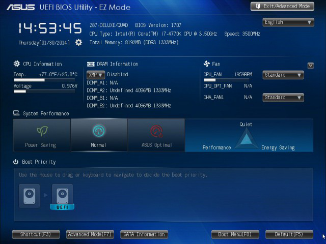
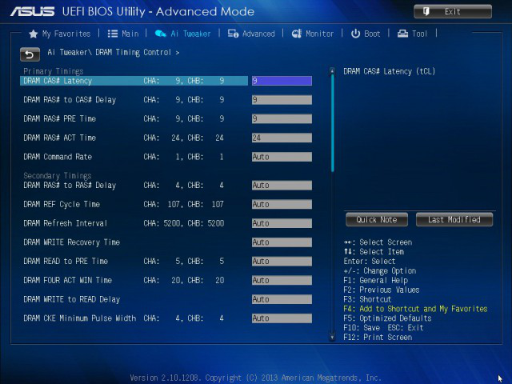
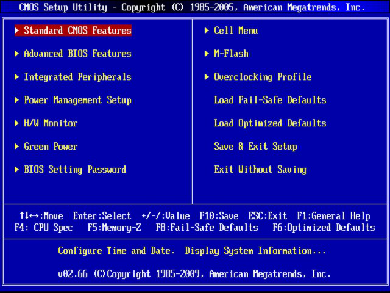

Справочник по настройкам BIOS. GECID.com
Поскольку именно с BIOS и ее настройками очень часто возникают вопросы, то мы решили начать составлять справочник, в котором и будем аккумулировать знания на эту популярную тему. Пока это получился относительно небольшой материал, хотя и вобрал в себя достаточно много интересных данных. В дальнейшем мы планируем периодически дополнять эту статью, чтобы максимально полно охватить все встречающиеся в BIOS опции.
Для облегчения поиска описания интересующей вас настройки, мы упорядочили их все по алфавиту. Также вы можете воспользоваться и функциями поиска по документу (в большинстве браузеров комбинация клавиш Ctrl+F вызывает окно «Поиска»).
Обращаем внимание, что в некоторых опциях может быть достаточно большое количество вариантов настройки, что обуславливается классом материнской платы, чипсетом, производителем и типами поддерживаемых устройств. Поэтому, в качестве примера настраиваемых значений, мы будем приводить наиболее актуальные на момент описания опции.

Структура справочника:
- Настройки BIOS в алфавитном порядке;
- Что такое BIOS?
- Как войти в BIOS?
[0-9 A B C D E F G H I J K L M N O P R S T U V W X Y Z]
1-Core Ratio Limit - задает предельное значение множителя 1-ого процессорного ядра в турборежиме.
[Auto] [8]..[Max]
2-Core Ratio Limit - задает предельное значение множителя 2-ого процессорного ядра в турборежиме. Данная опция становится активной только после выбора значения [Per Core] в параметре CPU Core Ratio.
[Auto] [Значение вводится вручную]
3-Core Ratio Limit - задает предельное значение множителя 3-ого процессорного ядра в турборежиме. Данная опция становится активной только после выбора значения [Per Core] в параметре CPU Core Ratio.
[Auto] [Значение вводится вручную]
3.3V Voltage − отображает текущее значение напряжения питания (в вольтах) на линии +3,3В.
[xxxx V]
4-Core Ratio Limit - задает предельное значение множителя 4-ого процессорного ядра в турборежиме. Данная опция становится активной только после выбора значения [Per Core] в параметре CPU Core Ratio.
[Auto] [Значение вводится вручную]
5V Voltage − отображает текущее значение напряжения питания (в вольтах) на линии +5В.
[xxxx V]
12V Voltage − отображает текущее значение напряжения питания (в вольтах) на линии +12В.
[xxxxx V]
1st Boot Device - первое загрузочное устройство
[xxx Drive] [Disabled]
Указанное в данном пункте устройство станет первым, с которого BIOS попытается загрузить операционную систему.
2nd Boot Device - второе загрузочное устройство
[xxx Drive] [Disabled]
Указанное в данном пункте устройство станет вторым по счету, с которого BIOS попытается загрузить операционную систему.
32Bit Data Transfer – 32 битный режим передачи данных
[Disabled] [Enabled]
При работе дисковых накопителей IDE или других, которые работают в совместимом режиме, 32 битный режим оптимизирует обмен данными по шине PCI. Если его отключить, то может немного снизиться быстродействие дисковой подсистемы, особенно в случае подключения двух IDE-устройств на один шлейф, поэтому лучше ставить опцию в положении Enabled.
3rd Boot Device - третье загрузочное устройство
[xxx Drive] [Disabled]
Указанное в данном пункте устройство будет третьим, с которого BIOS попытается загрузить операционную систему.
3.3V Voltage, 5V Voltage, 12V Voltage – отображает напряжение на линиях питания +3.3 В, +5 В и +12 В в разделе мониторинга.
ACPI 2.0 Support – поддержка ACPI 2.0
[Disabled] [Enabled]
Опция Enabled активирует поддержку интерфейса управления питанием ACPI (Advanced Configuration and Power Interface) спецификации 2.0, которая поддерживает 64-разрядные операционные системы и является обратно совместимой с версией ACPI 1.0b.
ACPI APIC Support – поддержка ACPI APIC
[Disabled] [Enabled]
Опция Enabled активирует поддержку Расширенным Интерфейсом Конфигурирования и управления Питанием (ACPI) Улучшенного Программируемого Контроллера Прерываний (APIC). Это дает возможность работы с многопроцессорными системами и системами с одним процессором многоядерной архитектуры или поддерживающим технологию Hyper-Threading. Для того, чтобы операционная система наиболее корректно использовала возможности многоядерного процессора, перед ее установкой необходимо включить эту опцию (например, Windows XP автоматически установит ядро ACPI Multiprocessor PC).
ACPI Suspend Type – Режим приостановки работы
[S1(POS)][ S3(STR)]
В этом пункте задается, насколько глубоким может быть спящий режим работы ПК:
S1(POS) – в этом режиме спящее состояние определяется переходом системы в состояние низкого энергопотребления всех компонентов, но при необходимости можно быстро вернуться в нормальный режим;
S3(STR) – в этом режиме содержимое оперативной памяти сохраняется в постоянной памяти и останавливаются практически все узлы ПК, что позволяет ему стать более экономным, чем в режиме S1(POS), но на возврат в рабочее состояние из этого режима уходит больше времени.
Active Memory Threshold - позволяет вручную задать размер раздела, требуемого для корректной работы технологии Intel Rapid Start Technology. Использование параметра [0] указывает системе определить необходимый размер автоматически. При ручном вводе значения необходимо следить, чтобы оно было больше объема оперативной памяти.
[0] - [Max]
Active Page Threshold Support - разрешает (значение [Enabled]) / запрещает (значение [Disabled]) системе автоматически задавать размер раздела, требуемого для корректной работы технологии Intel Rapid Start Technology. Установка значения [Enabled] также открывает доступ к опции Active Memory Threshold, где необходимый размер раздела можно задать вручную.
[Disabled] [Enabled]
Active to Precharge (Tras, tRAS) – минимальное время активности строки
При чтении данных из памяти определяет минимальное время между активацией строки (RAS#) и началом закрытия строки или подачей команды на предварительный заряд (tRP#).
Additional Turbo Mode CPU Cache Voltage - позволяет задать вручную максимальное значение напряжения питания в адаптивном (динамическом) режиме на кольцевой шине (Uncore/Cache) процессора. Алгоритм поиска оптимального значения такой же, как и в описании опции Additional Turbo Mode CPU Core Voltage. Данная настройка становится доступной только тогда, когда в опции CPU Cache Voltage выбран параметр [Adaptive Mode].
[Auto] [0.001V] - [Max]
Additional Turbo Mode CPU Core Voltage - позволяет задать вручную максимальное значение напряжения питания в адаптивном (динамическом) режиме, которое подается на ядра процессора. Для корректной работы адаптивного режима управления питанием процессорных ядер сначала нужно подобрать в ручном режиме (параметр [Manual Mode] в опции CPU Core Voltage) то напряжение, при котором система с разогнанным CPU ведет себя стабильно под максимальной нагрузкой. Потом следует полученное напряжение питания установить в опции Additional Turbo Mode CPU Core Voltage, а в настройке CPU Core Voltage Offset выбрать параметр [Auto]. При повторении такого набора действий вы добьетесь наиболее эффективной работы адаптивного режима управления питанием процессорных ядер. То есть при больших нагрузках система сама будет динамически подстраивать напряжение питания процессорных ядер, но при этом оно не будет превышать значение, установленное в опции Additional Turbo Mode CPU Core Voltage. Данная настройка становится доступной только тогда, когда в опции CPU Core Voltage выбран параметр [Adaptive Mode].
[Auto] [0.001V] - [Max]
Additional Turbo Mode CPU Graphics Voltage - позволяет задать вручную максимальное значение напряжения питания в адаптивном (динамическом) режиме на встроенном графическом ядре процессора. Алгоритм поиска оптимального значения такой же, как и в описании опции Additional Turbo Mode CPU Core Voltage. Данная настройка становится доступной только тогда, когда в опции CPU Graphics Voltage выбран параметр [Adaptive Mode].
[Auto] [0.001V] - [Max]
Adjacent Cache Line Prefetch - позволяет управлять блоком аппаратной предвыборки строки данных из оперативной памяти. Процессор во время работы пытается предсказать какие данные ему понадобятся в ближайшее время для выполнения операций и загружает из оперативной памяти не одну 64-байтную строку, а две смежных общей длиной 128 байт. Поскольку есть большая вероятность, что вторая подгружаемая строка окажется нужным набором данных для дальнейшего выполнения операций вычислительными блоками процессора, есть смысл включать данную опцию (значение [Enabled]). Ее активация может позитивным образом сказаться на быстродействии CPU.
[Disabled] [Enabled]
Administrator Password - подменю, содержащее параметры для управления паролем администратора. Он позволяет получить полный доступ (просмотр и редактирование) ко всем настройкам BIOS.
Advanced Menu - меню, включающее пункты для управления конфигурацией и фирменными технологиями, реализованными в процессоре, чипсете, системном агенте и других компонентах системы.
Agere Firewire 1394 – контроллер IEEE 1394a.
[Disabled] [Enabled]
Опция Enabled включает, а Disabled отключает интегрированный контроллер IEEE 1394a (FireWire) на чипе Agere. Отключение неиспользуемого контроллера может освободить системные ресурсы для других устройств.
Aggressive LPM Support - запрещает (параметр [Disabled]) / разрешает (параметр [Enabled]) переход накопителей и контроллера портов SATA в энергосберегающий режим. При частом обращении к накопителю и небольшом объеме оперативной памяти данную функцию рекомендуется отключать. Настройка становится доступной только тогда, когда в опции SATA Mode Selection выбран параметр [AHCI].
[Auto] [Disabled] [Enabled]
AI Overclocking
[Manual] [Auto] [Standard] [N.O.S.]
Настройка (на материнских платах ASUS) позволяет определить тип конфигурирования параметров системы, которые касаются разгона. Опция Manual соответствует пользовательскому режиму, в котором самостоятельно можно установить параметры системы, отвечающие за разгон. Auto соответствует режиму автоматической настройки системы, Standard – стандартному виду параметров, N.O.S. – активирует работу фирменной технологии ASUS N.O.S. динамического разгона.
Ai Overclock Tuner - опция, с помощью которой можно произвести автоматический разгон комплектующих (процессор, оперативная память, BCLK и др.) на материнских платах от ASUS.
[Auto] [Manual] [X.M.P.]
Ai Tweaker menu - меню в BIOS материнских плат ASUS, которое содержит настройки для оверклокинга и оптимизации работы отдельных компонентов системы.
All Processor Cores - позволяет выбрать количество активных процессорных ядер. Установка параметра [All] делает активными все доступные процессорные ядра.
[All] [1] [2] [3]
AMT Configuration - подменю, которое включает в себя настройки для управления параметрами технологии Intel Active Management Technology (удаленный и внеполосный доступ посредством сетевого подключения к ресурсам системы, в том числе и BIOS, вне зависимости от ее состояния).
Anti Surge Support − технология, которая на материнских платах ASUS реализует защиту от повышенного напряжения на основных линиях питания (+3,3В, +5В и +12В). Настоятельно рекомендуем активировать данную опцию, поскольку она позволяет предупредить выход из строя компонентов ПК в случае поломки блока питания или его некорректной работы.
[Disabled] [Enabled]
APM - подменю, в котором сгруппированы настройки для управления питанием системы с помощью подключенных к ней устройств.
Append db from File (из подменю DB Management) − загружает дополнительный файл базы данных db (более детально о ее предназначении читайте в описании пункта DB Management) из подключенного USB−накопителя, тем самым увеличивая список приложений, которые могут безопасно загружаться во время запуска ПК.
Append DBX from File (из подменю DBX Management) − загружает дополнительный файл базы данных dbx (более детально о ее предназначении читайте в описании пункта DBX Management) из подключенного USB−накопителя, тем самым увеличивая список приложений, которые по тем или иным причинам не прошли проверку или являются нежелательными для загрузки во время запуска ПК.
Append KEK from File (из подменю KEK Management) − загружает дополнительный ключ Key−Exchange Key (более детально о его предназначении читайте в описании пункта KEK Management) из подключенного USB−накопителя для дополнительных баз данных db и dbx, которые содержат подписи для желательных / нежелательных системных предзагрузчиков и UEFI−совместимых драйверов. При этом файл, содержащий ключ Key−Exchange Key, должен быть отформатирован соответствующим образом.
ASPM Support - опция, с помощью которой можно управлять энергосберегающей технологией шины DMI/PCIe на стороне чипсета. Контроллеры чипсета и устройств, подключенных к нему (через слоты PCI Express в том числе), всегда должны работать синхронно. Поэтому даже при отсутствии потока данных они посылают сигналы определенного вида, которые приемная часть интерпретирует как пустые и просто игнорирует. С помощью данной опции можно запретить передачу пустых сигналов в одну или обе стороны, тем самым будет экономиться электроэнергия при отсутствии потока данных между процессором и чипсетом. Однако при его появлении контроллерам шины DMI/PCIe потребуется определенное время для синхронизации.
[Disabled] [Auto] [L0s] [L1] [L0sL1]
ASUS C.G.I. Function - технология ASUS C.G.I.
[Auto] [Disabled] [Enabled]
Опция Enabled включает технологию ASUS C.G.I. (Cross Graphics Impeller), которая предназначена для разгона графической системы работающей в режиме CrossFire.
ASUS MultiCore Enhacement - устанавливает максимальный множитель для всех ядер при работе в турборежиме независимо от того, сколько ядер задействовано в конкретный момент. Активация данной функции позволит немного увеличить производительность процессора при больших нагрузках, однако при этом также возрастает его нагрев. Рекомендуется использовать при частой работе в многопоточных приложениях или во время одновременного выполнения нескольких программ, при серьезном разгоне CPU, а также для достижения максимальных результатов в синтетических тестах.
[Enabled] [Disabled]
BCLK Frequency : DRAM frequency ratio mode - позволяет задать делитель между опорной частотой и скоростью работы оперативной памяти. Для стабильной работы системы рекомендуется использовать значения [Auto] или [100:100]. Однако в некоторых случаях при экстремальном разгоне для достижения максимальных результатов в приложениях, зависимых от скорости оперативной памяти, могут пригодиться и другие делители.
[Auto] [100:100] [100:133]
Синонимы: CPU bus speed : DRAM speed ratio mode.
BIOS EHCI Hand-off – Отключение интерфейса EHCI
[Disabled] [Enabled]
Опция Enabled отключает поддержку улучшенного интерфейса хост-контроллера USB 2.0 EHCI (Enhanced Host Controller Interface). Интерфейс EHCI полностью совместим со стандартами USB 1.1 и 2.0 и призван уменьшить участие процессора в работе контролера USB.
BIOS Hotkey Pressed - позволяет запретить (параметр [Disabled]) / разрешить (параметр [Enabled]) удаленный доступ к настройкам BIOS с помощью технологии Intel Active Management Technology. Данная настройка становится доступной, только если в опции Intel AMT выбран параметр [Enabled].
[Disabled] [Enabled]
Block (Multi-Sector Transfer)
[Disabled] [Auto]
При настройке режимов работы SATA-контроллера опция Disabled позволяет выключить режим передачи данных блоками, если он не поддерживается вашим жестким диском. Делать это без нужды, конечно, не стоит, так как блочная адресация позволяет за один раз считывать сразу несколько секторов, что, безусловно, ускоряет процесс обмена данными.
Boot Devices Control − позволяет задать тип устройств, с которых возможна загрузка операционной системы. Изменение параметров становится доступным, только если в опции Launch CSM выбрано значение [Enabled].
[UEFI and Legacy OpROM] [Legacy OpROM only] [UEFI only]
Boot from Network Devices − позволяет задать тип и приоритет сетевых устройств, с которых возможна загрузка операционной системы. Изменение параметров становится доступным, только если в опции Launch CSM выбрано значение [Enabled].
[Legacy OpROM first] [UEFI driver first] [Ignore]
Boot from PCIe/PCI Expansion Devices − позволяет задать тип и приоритет устройств, подключенных через слоты PCI Express или PCI, с которых возможна загрузка операционной системы. Изменение параметров становится доступным, только если в опции Launch CSM выбрано значение [Enabled].
[Legacy OpROM first] [UEFI driver first]
Boot from Storage Devices − позволяет задать тип и приоритет внешних устройств для хранения информации, с которых возможна загрузка операционной системы. Изменение параметров становится доступным, только если в опции Launch CSM выбрано значение [Enabled].
[Both, Legacy OpROM first] [Both, UEFI first] [Legacy OpROM first] [UEFI driver first] [Ignore]
Boot Logo Display − с помощью данной опции можно задать, будет ли на экране отображаться логотип производителя и серии материнской платы во время прохождения процедуры POST−проверки.
[Disabled] [Enabled]
Boot Logo Size Control − позволяет задать размер логотипа, который будет отображаться на экране во время прохождения процедуры POST−проверки. Изменение параметров становится возможным, только если в опции Boot Logo Display выбрано значение [Enabled].
[Auto] [Full Screen]
Boot Menu − в этом меню собраны настройки для конфигурирования процесса загрузки компьютера и операционной системы.
Bootup NumLock State − определяет статус активности кнопки [NumLock], то есть доступность цифрового блока кнопок клавиатуры во время загрузки ПК.
[On] [Off]
Boot Option Priorities − позволяет задать приоритет и очередность устройств, с которых будет производиться попытка загрузки операционной системы. Количество и название устройств автоматически определяется системой после запуска ПК. Если в списке доступных вариантов не оказалось подключенного привода или накопителя, то это свидетельствует о неправильном подсоединении или его некорректном функционировании.
Boot Override − позволяет определить устройство, с которого будет осуществляться принудительная загрузка операционной системы после выхода из меню BIOS.
Boot Performance Mode - данная опция определяет производительность процессора, при которой происходит загрузка операционной системы. Для экономии электроэнергии (задействуются стандартные функции энергосбережения) во время этого процесса следует установить значение [Max Battery].
[Max Non-Turbo Performance] [Max Battery] [Turbo Performance]
C1E Support – Технология C1E
[Disabled] [Enabled]
Управляет технологией «C1E Support», которая разрешает отключение блоков процессора во время бездействия системы, чтобы уменьшить его энергопотребление. Опция Enabled разрешает работу технологии.
C6 Latency - определяет продолжительность задержки перед переходом процессора в состояние C6 из предыдущего режима.
[Short] [Long]
C7 Latency - определяет продолжительность задержки перед переходом процессора в состояние C7 из предыдущего режима.
[Short] [Long]
CAS# Latency (tCL) – Задержка CAS
[3] [4] [5] [6]
Настройка определяет задержку (тайминг) памяти CAS (Column Address Strobe) определяющую количество тактов (время) между получением команды на считывание и непосредственно началом считывания данных из микросхемы DRAM.
Change Settings (из подменю Serial Port Configuration) - опция, с помощь которой для интерфейса COM можно задать один из доступных адресов порта ввода/вывода, а также номер прерывания. Данная настройка становится доступной только в том случае, если в пункте Serial Port выбран параметр [Enabled].
[IO=3F8h; IRQ=4] [IO=2F8h; IRQ=3] [IO=3E8h; IRQ=4] [IO=2E8h; IRQ=3]
Channel A DIMM Control - управляет доступностью слотов оперативной памяти канала «А».
[Enable Both DIMMS] [Disable DIMM0] [Disable DIMM1] [Disable Both DIMMS]
Channel B DIMM Control - управляет доступностью слотов оперативной памяти канала «B».
[Enable Both DIMMS] [Disable DIMM0] [Disable DIMM1] [Disable Both DIMMS]
Chassis 1 Fan Min. Duty Cycle (%) − позволяет задать нижнюю границу диапазона скоростей вращения соответствующего вентилятора (в процентах от максимального количества оборотов). Данное значение используется для корректной работы технологии ASUS Chassis Q−Fan в режиме [Manual]. Более детально о принципе ее функционирования читайте в описании опции Chassis 1 Fan Profile. Выбор необходимого параметра осуществляется с помощью нажатия кнопок [+] или [−] на клавиатуре с шагом в 1%. Отметим, что значение Chassis 1 Fan Min. Duty Cycle (%) должно быть меньше, чем Chassis 1 Fan Max. Duty Cycle (%).
[60]...[100]
Chassis 1 Fan Profile − опция, с помощью которой можно выбрать один из предустановленных профилей или задать режим работы вентилятора, подключенного к разъему «CHA_FAN1» на материнской плате (точное название разъема смотрите на схеме в руководстве пользователя). Данная настройка становится доступной, только если в опции Chassis 1 Q−Fan Control выбрано значение [Enabled].
[Standard] [Silent] [Turbo] [Manual]
Chassis 1 Fan Speed Low Limit − позволяет системе автоматически контролировать исправность вентилятора, подключенного к разъему «CHA_FAN1» на материнской плате (точное название разъема смотрите на схеме в руководстве пользователя). Для корректной работы этой функции нужно с помощью доступных параметров задать минимальный порог скорости вращения вертушки. Если во время загрузки компьютера количество оборотов вентилятора будет ниже заданного значения, то на экране автоматически отобразится сообщение в виде фразы «System Fan Failure» (или аналогичной по смыслу) и дальнейшая загрузка ПК прекратится. Для отключения данной опции следует использовать параметр [Ignore]. Эта настройка становится доступной, только если в опции Chassis 1 Q−Fan Control выбрано значение [Enabled].
[Ignore] [200 RPM] [300 RPM] [400 RPM] [500 RPM] [600 RPM]
Chassis 1 Lower Temperature − отображает нижнюю границу диапазона допустимых температур (в градусах Цельсия) для чипсета. Данное значение используется для корректной работы технологии ASUS Chassis Q−Fan в режиме [Manual]. Более детально о принципе ее функционирования читайте в описании опции Chassis 1 Fan Profile. В большинстве случаев значение Chassis 1 Lower Temperature фиксировано на уровне прошивки BIOS и не подлежит изменению.
[хх]
Chassis 1 Max. Duty Cycle (%) − позволяет задать верхнюю границу диапазона скоростей вращения соответствующего вентилятора (в процентах от максимального количества оборотов). Данное значение используется для корректной работы технологии ASUS Chassis Q−Fan в режиме [Manual]. Более детально о принципе ее функционирования читайте в описании опции Chassis 1 Fan Profile. Выбор необходимого параметра осуществляется с помощью нажатия кнопок [+] или [−] на клавиатуре с шагом в 1%. Отметим, что значение Chassis 1 Fan Max. Duty Cycle (%) должно быть больше, чем Chassis 1 Fan Min. Duty Cycle (%).
[60]...[100]
Chassis 1 Q−Fan Control − опция, с помощью которой на материнских платах компании ASUS можно включить (значение [Enabled]) или выключить (значение [Disabled]) технологию автоматического управления скоростью вращения вентилятора, подключенного к разъему «CHA_FAN1» на материнской плате (точное название разъема смотрите на схеме в руководстве пользователя), в зависимости от температуры чипсета (ASUS Chassis Q−Fan). Поскольку температура набора системной логики не всегда является объективным показателем нагрева воздуха в системном корпусе или отдельных комплектующих, то следует уделить особое внимание тщательной настройке схемы работы данной функции. В противном случае вы можете не достичь требуемого эффекта от установки дополнительных вентиляторов, а лишь увеличите общий уровень создаваемого шума.
[Disabled] [Enabled]
Chassis 1 Speed [xxxRPM] – скорость вращения корпусных вентиляторов
[Ignore] [N/A]
В данном пункте меню производится мониторинг скорости вращения корпусных вентиляторов в об/мин. Эту функцию можно отключить, если установить в настройке опцию Ignore.
Chassis 1 Upper Temperature − позволяет задать верхнюю границу диапазона допустимых температур (в градусах Цельсия) для чипсета. Данное значение используется для корректной работы технологии ASUS Chassis Q−Fan в режиме [Manual]. Более детально о принципе ее функционирования читайте в описании опции Chassis 1 Fan Profile. Выбор необходимого параметра осуществляется с помощью нажатия кнопок [+] или [−] на клавиатуре с шагом в 1°C. Отметим, что значение Chassis 1 Upper Temperature должно быть больше, чем Chassis 1 Lower Temperature.
[40]...[75]
Chassis 2 Fan Profile − то же самое, что и Chassis 1 Fan Profile. Только речь идет уже о вентиляторе, подключенному к разъему «CHA_FAN2» на материнской плате (точное название разъема смотрите на схеме в руководстве пользователя).
[Standard] [Silent] [Turbo] [Manual]
Chassis 2 Fan Speed Low Limit − то же самое, что и Chassis 1 Fan Speed Low Limit. Только речь идет уже об автоматическом контроле исправности вентилятора, подключенного к разъему «CHA_FAN2» на материнской плате (точное название разъема смотрите на схеме в руководстве пользователя).
[Ignore] [200 RPM] [300 RPM] [400 RPM] [500 RPM] [600 RPM]
Chassis 2 Lower Temperature − то же самое, что и Chassis 1 Lower Temperature. Только речь идет уже о вентиляторе, подключенному к разъему «CHA_FAN2» на материнской плате (точное название разъема смотрите на схеме в руководстве пользователя).
[20]...[40]
Chassis 2 Max. Duty Cycle (%) − то же самое, что и Chassis 1 Max. Duty Cycle (%). Только речь идет уже о вентиляторе, подключенному к разъему «CHA_FAN2» на материнской плате (точное название разъема смотрите на схеме в руководстве пользователя).
[60]...[100]
Chassis 2 Min. Duty Cycle (%) − то же самое, что и Chassis 1 Min. Duty Cycle (%). Только речь идет уже о вентиляторе, подключенному к разъему «CHA_FAN2» на материнской плате (точное название разъема смотрите на схеме в руководстве пользователя).
[60]...[100]
Chassis 2 Q−Fan Control − то же самое, что и Chassis 1 Q−Fan Control. Только речь идет уже о применении технологии ASUS Chassis Q−Fan к вентилятору, подключенному к разъему «CHA_FAN2» на материнской плате (точное название разъема смотрите на схеме в руководстве пользователя).
[Disabled] [Enabled]
Chassis 2 Upper Temperature − то же самое, что и Chassis 1 Upper Temperature. Только речь идет уже о вентиляторе, подключенному к разъему «CHA_FAN2» на материнской плате (точное название разъема смотрите на схеме в руководстве пользователя).
[40]...[75]
Chassis Fan 1 Speed − отображает текущую скорость вращения вентилятора (в оборотах за минуту или RPM), подключенного к разъему «CHA_FAN1» на материнской плате (точное название разъема смотрите на схеме в руководстве пользователя). Если же вентилятор не подключен, выводится значение [N/A]. Если вы не желаете видеть этот показатель, выберите параметр [Ignore].
[xxxx RPM] [N/A] [Ignore]
Chassis Fan 2 Speed − то же самое, что и Chassis Fan 1 Speed. Только речь идет уже о текущей скорости вращения вентилятора, подключенного к разъему «CHA_FAN2» на материнской плате (точное название разъема смотрите на схеме в руководстве пользователя).
[xxxx RPM] [N/A] [Ignore]
Chasis Fan Ratio – Определение минимальной скорости вращения корпусных вентиляторов
[Auto] [90%] [80%] [70%] [60%]
В настройке «Chasis Fan Ratio» в процентах определяется минимальная скорость вращения корпусных вентиляторов, значению которой при регулировании функцией управления скоростью вращения Chasis Q-fan Control будет соответствовать минимальная температура процессора, указанная в настройке «Chassis Target Temperature». Практически минимальная скорость корпусных вентиляторов определяется по значению минимального напряжения питания установленных в корпусе вентиляторов и вычисляется с учетом того, что при напряжении питания 12 В скорость достигает 100%.
Chasis Q-fan Control - функция ASUS Q-fan для управления скоростью корпусных вентиляторов
[Disabled] [Enabled]
Настройка «Chasis Q-fan Control» служит для включения функции автоматического регулирования скоростью вращения корпусных вентиляторов, которая позволяет понизить шум от системного блока.
Chassis Target Temperature – параметр настройки Chasis Q-fan Control
[28ºC], [31ºC], [34ºC], [37ºC], [40ºC], [42ºC], [46ºC]
Настройка необходима для определения значения температуры процессора, при которой функция автоматического регулирования скоростью вращения корпусными вентиляторами ASUS Q-fan будет устанавливать минимальную скорость вращения. Эта настройка нужна для конфигурирования параметров регулятора.
C.I.A.2 - CPU Intelligent Accelerator 2
[Disabled] [Cruise] [Sports] [Racing] [Turbo] [Full Thrust]
Технология динамического разгона от GIGABYTE, которая при детектировании нагрузки на процессор увеличивает частоту системной шины и процессора до определенного уровня, в зависимости от выбранного режима:
Cruise – разгона на 5 или 7%;
Sports – разгона на 7 или 9%;
Racing – разгона на 9 или 11%;
Turbo – разгона на 15 или 17%;
Full Thrust – разгона на 17 или 19%.
Clear Secure Boot keys (из меню Secure Boot) − удаляет все стандартные ключи технологии Secure Boot. Функция становится доступной, только если в опции OS Type (из меню Secure Boot) выбрано значение [Windows UEFI mode].
Clock Over-Charging Mode
[Auto] [700mV] [800mV] [900mV] [1000mV]
Настройка необходима для повышения стабильности шины FSB при работе на повышенных частотах. Чем выше при разгоне устанавливается частота, тем выше рекомендуется выбирать и значения в настройке Clock Over-Charging Mode, но следует учесть, что это вызовет повышение нагрева северного моста чипсета.
Configure SATA as – Выбор интерфейса для устройства SATA
[IDE] [RAID] [AHCI]
Контроллер Serial ATA поддерживает несколько режимов работы. Первым является режим эмуляции параллельного интерфейса передачи данных ATA обычного IDE устройства, что необходимо для совместимости. Второй режим позволяет создавать RAID массивы. Третий режим - это фактически родной для Serial ATA протокол AHCI (Advanced Host Controller Interface), в котором реализованы такие функции оптимизации обращения к жесткому диску, как NCQ (Native Command Queuing), Hot Swap, Port Multiplier, Staggered Spin-Up, которые позволяют увеличить скорость передачи данных, понизить издаваемый «винчестером» шум и реализовать другие расширяющие возможности дисковой подсистемы функции.
Controller Mode – Выбор режима работы контроллера SATA
[RAID] [IDE] [AHCI]
В настройке «Controller Mode» можно определить режим работы дополнительного контроллера. Опция RAID позволит создавать SATA RAID массивы, опция IDE определит контроллер в режим эмуляции IDE устройств. Опция AHCI сконфигурирует SATA порты для работы по протоколу AHCI (Advanced Host Controller Interface), в котором реализованы такие функции оптимизации обращения к жесткому диску, как NCQ (Native Command Queuing), Hot Swap, Port Multiplier, Staggered Spin-Up.
Command Rate – Время декодирования команды
[1T][2T][3T]
Синонимы: CR, Command Per Clock, CMD
Задает время, которое необходимо контроллеру памяти для декодирования команды и адреса. Иногда описывается проще – время между началом выполнения двух команд. Настройка заметно влияет на производительность подсистемы памяти – чем меньше задержка, тем лучше. Но возможность ее успешного изменения, даже если она доступна, сильно зависит от количества и архитектуры установленных модулей памяти.
CPU Analog I/O Voltage Offset - позволяет задать вручную значение (offset-параметр), на которое будет увеличено / уменьшено (зависит от выбранного в опции CPU Analog I/O Voltage Offset Mode Sign знака) номинальное напряжение питания CPU Analog I/O (напрямую связано с встроенным контроллером памяти). Рекомендуется увеличивать при значительном разгоне оперативной памяти.
[Auto] [0.001V] - [Max]
CPU Analog I/O Voltage Offset Mode Sign - позволяет установить знак значения offset-параметра для опции CPU Analog I/O Voltage Offset, то есть, определить, будет увеличиваться или уменьшаться напряжение питания CPU Analog I/O (напрямую связано с встроенным контроллером памяти) на величину, заданную с помощью offset-параметра.
[+] [-]
CPU Audio Device - позволяет включить (параметр [Enabled]) / отключить (параметр [Disabled]) звуковое ядро, встроенное в процессоры Intel.
[Disabled] [Enabled]
CPU bus speed : DRAM speed ratio mode - смотрите описание опции BCLK Frequency : DRAM frequency ratio mode.
Синонимы: BCLK Frequency : DRAM frequency ratio mode.
CPU C States - позволяет управлять энергосберегающими состояниями процессора, при небольших нагрузках или при переходе его в режим простоя. Для полного доступа к настройкам этих состояний следует выбрать параметр [Enabled]. Для достижения максимального разгона процессора все его энергосберегающие режимы рекомендуется отключать.
[Auto] [Disabled] [Enabled]
CPU C3 Report - позволяет запретить (параметр [Disabled]) / разрешить (параметр [Enabled]) переход процессора в энергосберегающее состояние C3 (когда частота опускается до 0 МГц, отключается кэш-память L1 и L2, но при этом сохраняются значения всех регистров). В таком режиме CPU функционирует при очень незначительном напряжении питания, которое требуется лишь для хранения данных из регистров.
[Disabled] [Enabled]
CPU C6 Report - позволяет запретить (параметр [Disabled]) / разрешить (параметр [Enabled]) переход процессора в энергосберегающее состояние C6 (когда в состоянии C3 значения регистров записываются в постоянную память). В таком режиме CPU функционирует при очень незначительном напряжении питания, достаточном лишь для выхода его из этого состояния. При этом минимальная нагрузка на линию +12В может опускаться до 0,5 А, поэтому блок питания должен поддерживать такую возможность (определено в спецификации ATX12V 2.3).
[Disabled] [Enabled]
CPU C7 Report - позволяет запретить (параметр [Disabled]) / разрешить (параметры [CPU C7] и [CPU C7s]) переход процессора в энергосберегающее состояние C7 (усовершенствованное состояние C6 при котором потребляется еще меньше энергии). В отличие от режима C6 в состоянии C7 нагрузка на линию +12В значительно ниже и может достигать 0,05 А. Не все блоки питания могут обеспечить такой показатель, что приведет к их отключению или перезагрузке системы вследствие срабатывания защиты OVP/UVP на линии +12В. При возникновении такой проблемы следует отключить (параметр [Disabled]) данную опцию.
[Disabled] [CPU C7] [CPU C7s]
CPU Cache Voltage - позволяет выбрать режим установки напряжения питания на кольцевой шине (Uncore/Cache) процессора.
[Auto] [Manual Mode] [Offset Mode] [Adaptive Mode]
CPU Cache Voltage Offset - позволяет задать вручную значение (offset-параметр), на которое будет увеличено / уменьшено (зависит от выбранного в опции Offset Mode Sign знака) номинальное напряжение на кольцевой шине (Uncore/Cache) процессора. Параметр [Auto] соответствует значению «0». Данная опция становится доступной только тогда, когда в настройке CPU Cache Voltage выбран параметр [Offset Mode] или [Adaptive Mode].
[Auto] [0.001V] - [Max]
CPU Cache Voltage Override - позволяет задать вручную точное значение напряжения питания на кольцевой шине (Uncore/Cache) процессора. Опция становится доступной только тогда, когда в настройке CPU Cache Voltage выбран параметр [Manual Mode].
[Auto] [0.001V] - [Max]
CPU Configuration - подменю, которое содержит настройки конфигурации процессора, а также опции для управлениями фирменными технологиями, реализованными в нем.
CPU Core Voltage - позволяет выбрать режим установки напряжения питания, которое подается на ядра процессора.
[Auto] [Manual Mode] [Offset Mode] [Adaptive Mode]
CPU Core Voltage Offset - позволяет задать вручную значение (offset-параметр), на которое будет увеличено / уменьшено (зависит от выбранного в опции Offset Mode Sign знака) номинальное напряжение на ядрах процессора. Параметр [Auto] соответствует значению «0». Данная опция становится доступной только тогда, когда в настройке CPU Core Voltage выбран параметр [Offset Mode] или [Adaptive Mode].
[Auto] [0.001V] - [Max]
CPU Core Voltage Override - позволяет задать вручную точное значение напряжения питания (в вольтах), которое подается на ядра процессора. Опция становится доступной только тогда, когда в настройке CPU Core Voltage выбран параметр [Manual Mode].
[Auto] [0.001V] - [Max]
CPU Core Ratio - позволяет управлять множителями процессорных ядер.
[Auto] [Sync All Cores] [Per Core]
CPU Current Capability - позволяет увеличить значение максимальной мощности, подаваемой на процессор. Иными словами расширяет диапазон силы тока, потребляемым процессором при конкретном напряжении. Установка более высокого значения в процентах позволит избежать ситуации, когда материнская плата будет ограничивать возможности разгона из-за того, что реальное энергопотребление CPU станет превышать установленное производителем значение.
[Auto] [100%] [110%] [120%] [130%] [140%]
CPU Digital I/O Voltage Offset - позволяет задать вручную значение (offset-параметр), на которое будет увеличено / уменьшено (зависит от выбранного в опции CPU Digital I/O Voltage Offset Mode Sign знака) номинальное напряжение питания CPU Digital I/O (напрямую связано с встроенным контроллером памяти). Рекомендуется увеличивать при значительном разгоне оперативной памяти.
[Auto] [0.001V] - [Max]
CPU Digital I/O Voltage Offset Mode Sign - позволяет установить знак значения offset-параметра для опции CPU Digital I/O Voltage Offset, то есть, определить, будет увеличиваться или уменьшаться напряжение питания CPU Digital I/O (напрямую связано с встроенным контроллером памяти) на величину, заданную с помощью offset-параметра.
[+] [-]
CPU EIST Function – поддержка функции управления частотой
[Disabled] [Enabled]
Опция разрешает работу Enhanced Intel SpeedStep Technology, которая позволяет при неполной загрузке процессора уменьшать его тактовую частоту и напряжение питания, что приводит к снижению энергопотребления и уменьшению тепловыделения системой.
CPU Enhanced Halt (C1E) – поддержка расширенного режима «простоя»
[Disabled] [Enabled]
Опция предназначена для включения поддержки расширенных функций энергосбережения процессором в режиме простоя (C1E), когда в целях экономии не только автоматически снижается частота и напряжение, но и могут отключаться некоторые блоки.
CPU Fan Max. Duty Cycle (%) − позволяет задать верхнюю границу диапазона скоростей вращения вентилятора (в процентах от максимального количества оборотов) на процессорном кулере. Данное значение используется для корректной работы технологии ASUS CPU Q−Fan в режиме [Manual]. Более детально о принципе ее функционирования читайте в описании опции CPU Fan Profile. Выбор необходимого параметра осуществляется с помощью нажатия кнопок [+] или [−] на клавиатуре с шагом в 1%. Отметим, что значение CPU Fan Max. Duty Cycle (%) должно быть больше, чем CPU Fan Min. Duty Cycle (%).
[20]...[100]
CPU Fan Min. Duty Cycle (%) − позволяет задать нижнюю границу диапазона скоростей вращения вентилятора (в процентах от максимального количества оборотов) на процессорном кулере. Данное значение используется для корректной работы технологии ASUS CPU Q−Fan в режиме [Manual]. Более детально о принципе ее функционирования читайте в описании опции CPU Fan Profile. Выбор необходимого параметра осуществляется с помощью нажатия кнопок [+] или [−] на клавиатуре с шагом в 1%. Отметим, что значение CPU Fan Min. Duty Cycle (%) должно быть меньше, чем CPU Fan Max. Duty Cycle (%).
[20]...[100]
CPU Fan Profile − опция, с помощью которой можно выбрать один из предустановленных профилей или задать режим работы вентилятора на процессорном кулере. Данная настройка становится доступной, только если в опции CPU Q−Fan Control выбрано значение [Enabled].
[Standard] [Silent] [Turbo] [Manual]
CPU Fan Speed − отображает текущую скорость вращения вентилятора (в оборотах за минуту или RPM) на процессорном кулере. Если вентилятор не подключен к материнской плате, то выводится значение [N/A]. Если же вы не желаете видеть этот показатель, выберите параметр [Ignore]. Если вы сознательно не хотите использовать данный разъем (например, когда охлаждение процессора осуществляется с помощью СВО), также стоит установить значение [Ignore]. В противном случае при прохождении POST−проверки компьютер будет постоянно вам напоминать, что вентилятор на процессорном кулере не подключен, и требовать нажатия соответствующей клавиши на клавиатуре для продолжения загрузки системы.
[xxxx RPM] [N/A] [Ignore]
CPU Fan Speed Low Limit − позволяет системе автоматически контролировать исправность вентилятора на процессорном кулере. Для корректной работы этой функции нужно с помощью доступных параметров задать минимальный порог скорости вращения вертушки. Если во время загрузки компьютера количество оборотов вентилятора на процессорном кулере будет ниже заданного значения, то на экране автоматически отобразится сообщение в виде фразы «CPU Fan Error» и дальнейшая загрузка ПК прекратится. Для отключения данной опции следует использовать параметр [Ignore]. Настройка CPU Fan Speed Low Limit становится доступной, только если в опции CPU Q−Fan Control выбрано значение [Enabled].
[Ignore] [100 RPM] [200 RPM] [300 RPM] [400 RPM] [500 RPM]
CPU Fixed Frequency (KHz) - задает рабочую частоту для преобразователя напряжения питания процессора. Чем она выше, тем более стабильным является напряжение питания на выходе. Однако увеличение частоты переключения транзисторов ведет к дополнительному нагреву компонентов модуля VRM.
[200kHz]..[Max]
CPU Graphics Max. Ratio - смотрите описание опции Max. CPU Graphics Ratio.
Синонимы: Max. CPU Graphics Ratio.
CPU Graphics Voltage - позволяет выбрать режим установки напряжения питания на встроенном в процессор графическом ядре.
[Auto] [Manual Mode] [Offset Mode] [Adaptive Mode]
CPU Graphics Voltage Offset - позволяет задать вручную значение (offset-параметр), на которое будет увеличено / уменьшено (зависит от выбранного в опции Offset Mode Sign знака) номинальное напряжение на встроенном графическом ядре процессора. Параметр [Auto] соответствует значению «0». Данная опция становится доступной только тогда, когда в настройке CPU Graphics Voltage выбран параметр [Offset Mode] или [Adaptive Mode].
[Auto] [0.001V] - [Max]
CPU Graphics Voltage Override - позволяет задать вручную точное значение напряжения питания встроенного графического ядра процессора. Опция становится доступной только тогда, когда в настройке CPU Graphics Voltage выбран параметр [Manual Mode].
[Auto] [0.001V] - [Max]
CPU Host Frequency (MHz) – Опорная частота процессора
Синонимы: CPU FSB Clock, FSB Frequency, External Clock
Ручная установка опорной тактовой частоты (или частоты системной шины), с которой посредством множителей и делителей синхронизируются тактовые частоты остальных компонентов системы. При нормальной работе ПК чаще всего находится в положении Auto. Изменяется значение CPU Host Frequency только при разгоне процессора и/или других компонентов. Но следует помнить, что увеличение рабочих частот для микросхем приводит к увеличению их энергопотребления, а вследствие и тепловыделения – без хорошего охлаждения разгон крайне опасен.
CPU Input Voltage (VCCIN) - позволяет вручную задать точное значение входного напряжения процессора.
[Auto] [0.800V] .. [Max]
CPU Integrated VR Current Limit - позволяет установить максимальную силу тока (в амперах), проходящего через встроенный в процессоры Intel Haswell регулятор питания (FIVR) при высоких нагрузках. После преодоления этого значения будет срабатывать «троттлинг» (пропуск тактов). Установка максимального значения, по сути, снимает данное ограничение, что окажется полезным при экстремальном разгоне процессора.
[Auto] [0.125A] .. [1023.875A]
CPU Integrated VR Efficiency Management - отвечает за производительность встроенного в процессоры Intel Haswell регулятора питания (FIVR) во время простоя CPU. Во время разгона процессора рекомендуется использовать значение [High Performance].
[Auto] [High Performance] [Balanced]
CPU Integrated VR Fault Management - позволяет управлять механизмом защиты встроенного в процессоры Intel Haswell регулятора питания (FIVR) при высоких нагрузках. О природе действия данного алгоритма, как и показателях при которых он запускается, пока что ничего неизвестно. Можем лишь сказать, что он не является основной ступенью защиты CPU. В случае ручного повышения напряжения питания на процессоре для его разгона рекомендуется отключать эту опцию. Того же мнения придерживаются и специалисты компании ASUS.
[Auto] [Disabled] [Enabled]
CPU Internal Power Configuration - подменю, в котором сгруппированы настройки, отвечающие за энергоэффективность встроенного в процессоры Intel Haswell регулятора питания (FIVR).
CPU Internal Power Fault Control - подменю, открывающее доступ к настройкам механизмов защиты внешнего модуля VRM и встроенного в процессоры Intel Haswell регулятора питания (FIVR). Активно только тогда, когда в параметре Turbo Mode установлено значение [Enabled].
CPU Internal Power Saving Control - подменю, в котором сгруппированы настройки для управления энергосберегающими технологиями встроенного в процессоры Intel Haswell регулятора питания (FIVR).
CPU Internal Power Switching Frequency - подменю, открывающее доступ к настройкам встроенного в процессоры Intel Haswell регулятора питания (FIVR). Активно только тогда, когда в параметре Turbo Mode установлено значение [Enabled].
CPU Lower Temperature − отображает нижнюю границу диапазона допустимых температур (в градусах Цельсия) для процессора. Данное значение используется для корректной работы технологии ASUS CPU Q−Fan в режиме [Manual]. Более детально о принципе ее функционирования читайте в описании опции CPU Fan Profile. В большинстве случаев значение CPU Lower Temperature фиксировано на уровне прошивки BIOS и не подлежит изменению.
[xx]
CPU Multi-Threading – поддержка многоядерных процессоров
[Enable][Disable]
Позволяет для многоядерных процессоров, в том числе и с поддержкой логической многоядерности Hyper-Threading, включать и отключать режим многопоточных вычислений. Фактически при выборе варианта Disable отключаются все ядра процессора кроме первого физического. При использовании многоядерного процессора или процессора с поддержкой технологии Hyper-Threading опция должна всегда быть Enable.
CPU PLL Voltage - Напряжение питания ФАПЧ
[Auto] [1.50V] [1.60V] [1.70V] [1.80V]
Настройка «CPU PLL Voltage» определяет напряжение питания системы Фазовой АвтоПодстройки Частоты (ФАПЧ или PLL - Phase Locked Loop) и является актуальной лишь для повышения стабильности работы разогнанных четырехъядерных процессоров. В большинстве случаев достаточно самого минимального значения или вообще можно установить параметр в режим Auto.
CPU Power Duty Control - указывает материнской плате, по какому параметру контролировать нагрузку на каждой фазе процессорного преобразователя питания.
[T.Probe] [Extreme]
CPU Power Management - подменю, которое включает настройки для управления процессорными ядрами и технологиями энергосбережения, реализованными в CPU.
CPU Power Management Configuration - подменю, в котором сгруппированы настройки для управления состояниями процессора под нагрузками разного типа.
CPU Power Phase Control - управление количеством активных фаз питания в зависимости от нагрузки на процессор. Для повседневной работы рекомендуется использовать значения [Auto] или [Optimized]. В режиме [Extreme] преобразователь питания CPU будет работать «на полную катушку», что приведет к неоправданному нагреву его элементов при небольших нагрузках на процессор.
[Auto] [Standard] [Optimized] [Extreme] [Manual Adjustment]
CPU Q−Fan Control − опция, с помощью которой на материнских платах компании ASUS можно включить (значение [Enabled]) или выключить (значение [Disabled]) технологию автоматического управления скоростью вращения вентилятора в зависимости от температуры процессора (ASUS CPU Q−Fan). Рекомендуем активировать данную возможность, поскольку она позволяет добиться заметного снижения уровня шума от процессорного кулера, особенно в тех случаях, когда на процессор ложится небольшая нагрузка.
[Disabled] [Enabled]
CPU Spread Spectrum - активация данной опции изменяет форму сигнала на системной шине (BCLK), благодаря чему уменьшается уровень электромагнитного излучения и наводок от компонентов системы. Однако из-за этого также немного снижается опорная частота (в стандартном режиме вместо 100 МГц она опускается до 99,3 - 99,5 МГц), что при разгоне может привести к нестабильной работе системы, а также не позволит достичь максимальных результатов. При любой, даже незначительной, оптимизации параметров системы рекомендуется отключать эту опцию (значение [Disable]). Тем более что изменения уровня излучения при ее активация совсем мизерные и фактически никак не влияют на стабильность работы компонентов компьютера и других электрических приборов, расположенных возле него.
[Auto] [Disabled] [Enabled]
CPU System Agent Voltage Offset - позволяет задать вручную значение (offset-параметр), на которое будет увеличено / уменьшено (зависит от выбранного в опции CPU System Agent Voltage Offset Mode Sign знака) номинальное напряжение на системном агенте (System Agent). Напряжение питания на системном агенте, по сути, является напряжением питания на контроллере памяти. Таким образом, при разгоне модулей памяти до высокой скорости возможно придется увеличивать это напряжение.
[Auto] [0.001V] - [Max]
CPU System Agent Voltage Offset Mode Sign - позволяет установить знак значения offset-параметра для опции CPU System Agent Voltage Offset, то есть, определить, будет увеличиваться или уменьшаться напряжение питания на системном агенте (System Agent) на величину, заданную с помощью offset-параметра.
[+] [-]
CPU Temperature [xxx°C/xxx°F] – отображает температуру процессора в разделе мониторинга системы.
CPU TM Function (Thermal Monitor 2, TM2) – Функция защиты процессоров Intel от перегрева
[Disabled] [Enabled]
Настройка «CPU TM Function» отвечает за функцию Thermal Monitor защиты процессора от перегрева. При достижении критической температуры процессора механизм Thermal Monitor производит комплекс мер, таких как пропуск тактовых импульсов, снижение тактовой частоты и рабочего напряжения, вплоть до отключения ПК, которые предотвращают выход системы из строя.
CPU Upper Temperature − позволяет задать верхнюю границу диапазона допустимых температур (в градусах Цельсия) для процессора. Данное значение используется для корректной работы технологии ASUS CPU Q−Fan в режиме [Manual]. Более детально о принципе ее функционирования читайте в описании опции CPU Fan Profile. Выбор необходимого параметра осуществляется с помощью нажатия кнопок [+] или [−] на клавиатуре с шагом в 1°C. Отметим, что значение CPU Upper Temperature должно быть больше, чем CPU Lower Temperature.
[20]...[75]
CPU Voltage – Напряжение на ядре процессора
[Auto] … [1.1V] …[1.7V] …
Настройка «CPU Voltage» определяет напряжение питания ядра процессора. Для стандартного режима работы следует оставить опцию Auto, а уже для режима разгона напряжение можно повысить, но при этом обязательно следует учитывать условия его охлаждения, потому что повышение напряжение на ядре напрямую влияет на его тепловыделение.
CPU Voltage Damper – Функция понижающая просадку напряжения на процессоре
[Auto] [Disabled] [Enabled]
Функция CPU Voltage Damper понижает проседание напряжения на процессоре, которое может возникать при повышенной его загрузке. Опция Enable включает функцию, которая в большей степени является актуальной лишь для «оверлокинга».
CPU Voltage Reference - Режим подачи питания на процессор
[Auto] [0.63x] [0.61x] [0.59x] [0.57x]
Настройка, определяющая режим подачи питания на процессор. Для лучшей стабильности разогнанной системы следует выбрать опцию 0.63x, а для обычной работы рекомендуем оставить Auto.
CSM (Compatibility Support Module) − подменю, в котором собраны настройки для управления технологией совместимости UEFI−устройств с устаревшим оборудованием и модулями от сторонних производителей.
Create New Password - задает новый пароль на доступ к настройкам BIOS. Обширность прав доступа зависит от уровня пароля (администратора / пользователя).
DB Management (из меню Secure Boot) − подменю, в котором собраны опции для настройки базы данных db (Authorised Signature Database). Она содержит подписи и хэш−образы всех UEFI−совместимых приложений, системных предзагрузчиков и UEFI−драйверов, которые могут запускаться на конкретно взятом ПК. Раздел DB Management становится доступным, только если в опции OS Type (из меню Secure Boot) выбрано значение [Windows UEFI mode].
DBX Management (из меню Secure Boot) − подменю, в котором собраны опции для настройки базы данных dbx (Revoked Signature Database). Она содержит подписи и хэш−образы всех UEFI−совместимых приложений, предзагрузчиков и UEFI−драйверов, которые не прошли проверку или несут потенциальную угрозу для системы. Раздел DBX Management становится доступным, только если в опции OS Type (из меню Secure Boot) выбрано значение [Windows UEFI mode].
DDR OverVoltage Control – превышение напряжения на памяти
[+0.05V]...[+1.55V]
Синонимы: DDR2 OverVoltage Control, DDR3 OverVoltage Control
Эта настройка позволяет увеличивать рабочее напряжение модулей памяти на указанную величину вольт, что бывает необходимо для разгона оперативной памяти или запуска оверклокерских модулей в их номинальном режиме. При этом следует учитывать ряд факторов:
- увеличение напряжения ведет к увеличению нагрева, что может стать причиной «смерти» модулей памяти, особенно если они не имеют дополнительного охлаждения;
- подымается напряжение относительно стандартного для используемого типа памяти (DDR – 2,5 В, DDR2 – 1,8 В, DDR3 – 1,5 В);
- на некоторых материнских платах изначально завышено рабочее напряжение модулей памяти на 0,05-0,15 В, что тоже нужно учитывать.
Deep S4 - разрешает (значение [Enabled]) / запрещает (значение [Disabled]) переход ПК в состояние сна «S4» (абсолютно все настройки записываются на накопитель и идет максимально полное обесточивание компонентов системы). В таком режиме ПК может быть вновь запущен только с помощью нажатия кнопки «POWER» на системном блоке или через сигнал, поданный по LAN-интерфейсу. При этом система никак не будет реагировать на нажатие кнопок на клавиатуре или движение мышки (независимо от их типа подключения - USB или PS/2).
[Disabled] [Enabled]
Delete PK (из подменю PK Management) − удаляет главный ключ Platform Key (более детально о его предназначении читайте в описании пункта PK Management). После этой процедуры все остальные ключи технологии Secure Boot становятся неактивными.
Delete the db (из подменю DB Management) − удаляет файл базы данных db (более детально о ее предназначении читайте в описании пункта DB Management) из системы.
Delete the DBX (из подменю DBX Management) − удаляет файл базы данных dbx (более детально о ее предназначении читайте в описании пункта DBX Management) из системы.
Delete the KEK (из подменю KEK Management) − удаляет ключ Key−Exchange Key (более детально о его предназначении читайте в описании пункта KEK Management) из системы.
DMA Mode – выбор режима DMA при настройке режимов работы с устройствами хранения информации
[Auto] [SWDMA0] [SWDMA1] [SWDMA2] [MWDMA0] [SWDMA1] [SWDMA2] [UDMA0] [UDMA1] [UDMA2] [UDMA3] [UDMA4] [UDMA5]
Опция позволяет выбрать соответствующий режим DMA, который поддерживает устройство, хотя в большинстве случаев BIOS справится с этим самостоятельно.
Зависимость пропускной способности от выбранного режима DMA приведена в таблице:
|
Режим DMA |
Максимальная скорость передачи, МБ/с |
Спецификация |
|
Single word |
||
|
0 |
2,08 |
ATA |
|
1 |
4,16 |
ATA |
|
2 |
8,33 |
ATA |
|
Multi word |
||
|
0 |
4,12 |
ATA |
|
1 |
13,3 |
ATA-2 |
|
2 |
16,6 |
ATA-2 |
|
Ultra DMA |
||
|
0 |
33,3 |
Ultra ATA |
|
1 |
66,7 |
Ultra ATA |
|
2 |
100 |
Ultra ATA |
|
3 |
133 |
Ultra ATA |
|
4 |
150 |
Serial ATA I |
|
5 |
300 |
Serial ATA II |
DMI Configuration - подменю, которое включает в себя настройки для управления параметрами шины DMI (высокоскоростная шина передачи данных между процессором и чипсетом).
DMI Gen 2 - позволяет задать тип шины DMI, а соответственно, и максимальную скорость обмена данными между процессором и чипсетом: 1.0 (до 2 ГБ/с) или 2.0 (до 4 ГБ/с). Чтобы данная шина не оказалась узким местом в работе системы, рекомендуем выбирать второй вариант (DMI 2.0).
[Auto] [Disabled] [Enabled]
DMI Link ASPM Control (из меню PCH Configuration) - опция, с помощью которой можно разрешить (значение [Enabled]) / запретить (значение [Disabled]) использование энергосберегающей технологии шины DMI/PCIe на стороне чипсете. Во время разгона компонентов системы рекомендуются ее отключать, поскольку выход из этого состояния и синхронизация контроллеров шины DMI/PCIe занимает определенное время. Для более тонкой настройки данной технологии на стороне чипсета используйте опцию ASPM Support.
[Auto] [Disabled] [Enabled]
DMI Link ASPM Control (из меню System Agent Configuration) - опция, с помощью которой можно управлять энергосберегающей технологией шины DMI на стороне системного агента (System Agent). Суть ее работы такая же, как и в случае с чипсетом (смотрите описание настройки DMI Link ASPM Control из меню PCH Configuration).
[Disabled] [Auto] [L0s] [L1] [L0sL1]
DRAM CLK Period - позволяет задать задержку контроллера памяти в сочетании с установленной частотой памяти. Установка более низких значений ([5], [6], [7]) позволяет увеличить общую производительность системы, однако это может негативным образом сказаться на стабильности ее работы.
[Auto] [1]..[14]
DRAM CTRL REF Voltage - позволяет задать сигнальное напряжение питания для всех каналах памяти при обмене данными между процессором и оперативной памятью. Иными словами, это своего рода указатель, по которому контроллер памяти определяет соответствие посланного сигнала значению «0» или «1». Все напряжения питания ниже значения, определенного в опции DRAM CTRL REF Voltage будут интерпретироваться как «0», а выше - как «1». Задается в виде множителя относительно напряжения питания на модулях памяти (DRAM Voltage). По умолчанию равно значению [0,500х]. При обычном разгоне комплектующих системы рекомендуется использовать параметр [Auto]. Настраивать вручную данную опцию есть смысл лишь при максимальном разгоне с использованием экстремального охлаждения в случаях, когда уровень пульсаций и наводок искажает входной/выходной сигнал.
[Auto] [0.3950x] .. [0.6300x]
DRAM DATA REF Voltage on CHA - позволяет задать сигнальное напряжение питания для канала памяти «A» при обмене данными между процессором и модулями оперативной памяти, установленными в слоты канала «A». Алгоритм подбора нужного значения, а также случаи использования данной настройки такие же, как и в описании опции DRAM CTRL REF Voltage.
[Auto] [0.3950x] .. [0.6300x]
DRAM DATA REF Voltage on CHB - позволяет задать сигнальное напряжение питания для канала памяти «B» при обмене данными между процессором и модулями оперативной памяти, установленными в слоты канала «B». Алгоритм подбора нужного значения, а также случаи использования данной настройки такие же, как и в описании опции DRAM CTRL REF Voltage.
[Auto] [0.3950x] .. [0.6300x]
DRAM Frequency - позволяет задать частоту оперативной памяти. Список значений зависит от возможностей используемых модулей памяти и параметра BCLK Frequency : DRAM frequency ratio mode (CPU bus speed : DRAM speed ratio mode). Установка слишком большой частоты может привести к нестабильной работе всей системы. Выбор значения [Auto] загружает стандартные настройки скорости работы памяти.
Синонимы: Memory Frequency.
DRAM Static Read Control - Функция ускорения работы памяти
[Auto] [Disabled] [Enabled]
Опция Enabled включает функцию ускорения подсистемы памяти.
DRAM Timing Control (Timing Selectable) – Способ определения таймингов памяти
[Auto] [Manual]
Опция Manual активирует режим пользовательской настройки таймингов (задержек) оперативной памяти.

DRAM Voltage - позволяет вручную установить точное значение напряжения питания на модулях оперативной памяти.
[Auto] [1.185V] .. [Max]
DVI Port Audio - разрешает (значение [Enabled]) / запрещает (значение [Disabled]) использование встроенного в процессоры Intel звукового ядра для вывода звука через порт DVI. Настройка становится доступной только тогда, когда в опции CPU Audio Device выбран параметр [Enabled].
[Disabled] [Enabled]
EHCI Hand-off - запрещает (параметр [Disabled]) / разрешает (параметр [Enabled]) использование механизма EHCI Hand-off на аппаратном уровне. Он предназначен для корректной работы контроллера EHCI (отвечает за интерфейс USB 2.0) в случае одновременного обращения к нему нескольких USB-устройств. Данную опцию следует активировать, если механизм EHCI Hand-off не реализован на уровне операционной системы (например, его поддержка появилась в ОС семейства MS Windows только начиная с версии MS Windows XP SP2).
[Disabled] [Enabled]
Enhanced C1 State - позволяет запретить (параметр [Disabled]) / разрешить (параметр [Enabled]) переход процессора в энергосберегающее состояние C1E (когда при отсутствии нагрузки множитель, а соответственно и частота снижаются до определенного производителем минимума, но при этом другие компоненты процессора и интерфейсы продолжают работать). В таком режиме CPU не выполняет операций и функционирует при пониженном напряжении питания. Но в случае необходимости (появление нагрузки) может незамедлительно вернуться в свое основное рабочее состояние.
[Disabled] [Enabled]
Enhanced Intel SpeedStep Technology - управляет фирменной для процессоров Intel функцией энергосбережения. Суть ее заключается в том, что при малой нагрузке или простое CPU автоматически уменьшает частоту и напряжение питания, тем самым снижая свое энергопотребление. Она имеет несколько промежуточных рабочих состояний, что позволяет оптимальным образом соблюдать баланс между производительностью и потреблением энергии процессора.
[Disabled] [Enabled]
Enter Current Password - параметр для ввода существующего пароля на доступ к настройкам BIOS. Обширность прав доступа зависит от уровня пароля (администратора / пользователя).
Entry after - позволяет задать время в минутах, по истечении которого компьютер перейдет в состояние сна «S4» (абсолютно все настройки записываются на накопитель и идет максимально полное обесточивание компонентов системы), то есть активируется функция Intel Rapid Start Technology.
[0] ... [120]
Entry on S3 RTC Wake - для корректной работы технологии Intel Rapid Start Technology после перехода компьютера в стандартное состояние сна «S3» (все основные компоненты отключены; питание подается только на оперативную память и некоторые модули, сохраняющие настройки состояния системы) иногда требуется пробуждение его для перевода в более глубокий режим сна «S4» (абсолютно все настройки записываются на накопитель и идет максимально полное обесточивание компонентов системы). Выбор значения [Enabled] разрешает такую возможность, при этом процесс смены состояний будет происходить автоматически.
[Disabled] [Enabled]
EPU Power Saving Mode - отвечает за активацию фирменной энергосберегающей технологии ASUS EPU. Она представляет собой программно-аппаратный комплекс, который контролирует нагрузку на систему и в случае необходимости автоматически изменяет параметры основных компонентов системы (процессора, видеокарты, накопителей, оперативной памяти, чипсета и кулера) для экономии электроэнергии. Для достижения максимальных результатов во время разгона комплектующих, рекомендуется данную функцию выключать.
[Disabled] [Enabled]
Execute Disable Bit - позволяет управлять технологией No-Execute Page Protection, которая предотвращает возможность выполнения данных как кода. Является дополнительной защитой на аппаратном уровне от хакерских атак и других угроз подобного рода, в частности для предотвращения уязвимостей «переполнения буфера», которые позволяют локально или удаленно выполнять произвольный код на атакуемой системе. Рекомендуется оставлять эту опцию всегда включенной (значение [Enabled]).
[Disabled] [Enabled]
Extreme OV - смотрите описание опции Extreme Over-voltage.
Синонимы: Extreme Over-voltage.
Extreme Over-voltage - опция, активация которой позволяет получить доступ к максимально высоким значениям напряжений питания.
[Disabled] [Enabled]
Синонимы: Extreme OV.
Fast Boot − активация этой опции (значение [Enabled]) позволяет сократить время загрузки ПК путем отмены процедуры POST−проверки комплектующих после запуска системы.
[Disabled] [Enabled]
Floppy Diskette A – Определение типа дисковода.
[Disabled] [720K , 3.5 in.] [1.44M, 3.5 in.]
В этой настройке определяется тип Floppy-дисковода или производится его отключение. Самостоятельно определять вид дисковода BIOS не может, поэтому все будет зависеть от пользователя. Заметим, что единственным распространенным сегодня типом Floppy -дисководов является 1,44 Mб, 3,5" вариант.
Frame Buffer Size – Размер кадрового буфера.
[1M]...[16M]...[128M]...[1024M][Disable]
Задание объема оперативной памяти, который отводится для нужд встроенной видеокарты, некоторые операционные системы, например MS-DOS, могут использовать только помеченную таким образом память для ее нужд. В последних версиях ОС Windows объемом используемой оперативной памяти для большинства интегрированных видеокарт управляет драйвер, а описываемая опция только ограничивает нижний предел, т.е. какой минимальный объем всегда «отобрано» из оперативной памяти для нужд видеосистемы.
Frequency Tuning Mode - опция, с помощью которой можно управлять частотой работы встроенного в процессоры Intel Haswell регулятора питания (FIVR). Более высокое значение даст лучшую стабильность выходного напряжения, однако приведет к дополнительному энергопотреблению и тепловыделению.
[Auto] [-6%] .. [+6%]
Front Panel Type - позволяет задать режим вывода звука через соответствующий коннектор, расположенный на материнской плате, на аудиовыходы на фронтальной панели корпуса.
[AC'97] [HD]
FSB Frequency – Частота системной шины
Позволяет вручную задавать опорную тактовую частоту системной шины и, соответственно, процессора (частота CPU равна частоте FSB умноженной на определенный множитель, который обычно жестко зашит в процессор).
FSB – Memory Clock Mode - Режим установки частот памяти и FSB
[Auto][Linked][Unlinked]
Опция определяет режим, в котором будет выставляться тактовая частота для системной шины и оперативной памяти:
Auto – автоматически в зависимости от свойств процессора и модулей памяти;
Linked – частота оперативной памяти пропорциональна изменяемой частоте FSB;
Unlinked – независимое задание частот системной шины и оперативной памяти.
FSB – Memory Ratio – Соотношение частот FSB и памяти
[1:1][5:4]...[3:2][Sync Mode]
Опция позволяет задать делитель для получения частоты оперативной памяти. Эта функция актуальна в двух случаях: когда устанавливаются «оверклокерские» модули оперативной памяти, но материнская плата в автоматическом режиме установила им меньшую тактовую частоту; когда производится разгон процессора и необходимо занизить рабочую частоту модулей памяти, чтобы они не ограничивали разгон.
FSB OverVoltage Control – увеличение сигнального уровня на FSB
[+0.05V]...[+0.35V]
Позволяет увеличивать на определенную величину уровень сигналов на системной шине, что может быть необходимо для достижения стабильности разогнанной системы. Как и любое увеличение рабочих напряжений, ведет к большему нагреву чипсета.
FSB Strap to North Bridge – Частота «страпа» FSB для северного моста
[Auto] [200] [266] [333]... или в виде результирующих [800] [1066] [1333]...
По сути FSB Strap – это набор предустановленных задержек, которые с точки зрения производителя оптимально соответствуют определенной частоте системной шины, для определенного диапазона рабочих частот чипсета. Подбираются задержки так, чтобы обеспечивалась высокая стабильность работы системы и оставалась хорошая производительность. При этом, чем выше частота системной шины, тем большие задержки нужны для обеспечения стабильной работы чипсета. (По аналогии с оперативной памятью – чем выше тайтинги, т.е. задержки, тем на большей частоте может работать микросхема.) Соответственно, данная опция позволяет выбирать, с каким набором задержек будет работать чипсет. При установке значения FSB Strap следует учитывать, что при меньшем значении устанавливаются меньшие задержки и увеличивается производительность, а при установке большего значения немного падает производительность, но повышается стабильность. Наиболее актуальна опция при разгоне для обеспечения стабильности при высокой частоте FSB. (Примечание: для некоторых чипсетов и в некоторых BIOS установка FSB Strap делается только автоматически в зависимости от FSB используемого процессора и его максимального и выбранного в настройках множителей.)
FSB Termination Voltage – Напряжение на шине FSB
[Auto] [1.2V] …[1.5V]
Настройка «FSB Termination Voltage» определяет величину напряжения сигналов системной шины.
Full Screen LOGO Show – показывать полноэкранную заставку
[Disabled] [Enabled]
Разрешает при включении ПК вместо отчета BIOS о начале загрузки и инициализации устройств показывать фирменную заставку (или измененную пользователем).
GMCH OverVoltage Control – увеличения рабочего напряжения северного моста
[+0.025V]...[+0.175V] или [1.25V] …[1.7V]
Синонимы: MCH OverVoltage Control, North Bridge Voltage
Для увеличения стабильности работы разогнанной системы и/или увеличения разгонного потенциала зачастую необходимо увеличить рабочее напряжение Северного Моста (North Bridge, (G)MCH – обозначение по терминологии Intel с и без встроенного видео). Именно это и позволяет сделать данная опция. Но следует учитывать, что это вызывает повышенный нагрев микросхемы.
GPU Boost - активация данной функции позволяет во время максимальных нагрузок автоматически увеличивать скорость встроенного в процессор графического ядра и как следствие его производительность.
[As Is] [Enabled]
Graphics Configuration - подменю, где осуществляется выбор устройства вывода изображения и предоставляется доступ к настройкам встроенного в процессоры Intel графического ядра.
Halt on – Условия прекращения загрузки
Опция содержит варианты набора ошибок при появлении которых во время прохождения системой POST-теста следует прекратить загрузку:
No Errors – Система продолжает попытку загрузиться при любых ошибках;
All Errors – Загрузка прекращается при появлении любой ошибки, даже не значительной;
All, But Keyboard – Загрузка прекращается при появлении любых ошибок, за исключением ошибок клавиатуры;
All, But Diskette – Загрузка прекращается при появлении любых ошибок, за исключением ошибок флоппи-дисковода;
All, But Disk/Key – Загрузка прекращается при появлении любых ошибок, за исключением ошибок клавиатуры и флоппи-дисковода.
Hard Disk Write Protect
[Disabled] [Enabled]
Опция позволяет запрещать или разрешать запись на жесткий диск. Опция эффективна только если устройство получает доступ через BIOS.
Hardware Prefetcher - позволяет управлять блоком аппаратной предвыборки данных и инструкций из оперативной памяти. Процессор во время работы пытается предсказать какие ресурсы ему понадобятся в ближайшее время для выполнения операций и загружает их в кэш-память. Отключение этого механизма (параметр [Disabled]) приведет к частым простоям процессора, что повлечет за собой снижение его производительности. Поэтому настоятельно рекомендуется оставлять эту опцию активированной (значение [Enabled]).
[Disabled] [Enabled]
HD Audio Controller - разрешает (значение [Enabled]) / запрещает (значение [Disabled]) использование встроенной звуковой карты для вывода аудиосигнала.
[Disabled] [Enabled]
High Definition Audio – аудио-контроллер
[Disabled] [Enabled]
Опция Disabled отключает встроенный в материнскую плату аудио-контроллер.
Hot Plug - разрешает (значение [Enabled]) / запрещает (значение [Disabled]) использование «горячего» подключения накопителей, то есть без выключения питания компьютера. Настройка становится доступной только тогда, когда в опции SATA Mode Selection выбран параметр [AHCI].
[Disabled] [Enabled]
HPET Support – поддержка HPET
[Enable][Disable]
Контроллер HPET (High Precision Event Timer) разработан Intel для расширения возможностей и последующей замены Расширенного Программируемого Контроллера Прерываний (Advanced Programmable Interrupt Controller - APIC). Он добавляет поддержку большего числа прерываний, ускоренную реакцию на них и повышает точность системного времени. Работу с HPET поддерживают только новые операционные системы (Windows Vista, Mac OS X 10, Linux 2.6 and FreeBSD 7.0).
HPET Mode – режим счетчиков HPET
[32-bit][64-bit]
Поскольку контроллер HPET разрабатывался изначально с прицелом на 64-разрядные ОС, то и счетчики у него соответствующей ширины. При использовании 32-разрядной ОС с целью исключения конфликтов нужно уменьшить ширину счетчиков.
Hybrid Hard Disk Support - разрешает (значение [Enabled]) / запрещает (значение [Disabled]) использование гибридных жестких дисков (SSHD) для работы технологии Intel Rapid Start Technology.
[Disabled] [Enabled]
Hyper-threading - позволяет управлять работой технологии многопоточности Intel Hyper-threading, когда каждое физическое ядро процессора определяется операционной системой как два логических (два потока), что в ряде случаев обеспечивает некоторое увеличение производительности.
[Disabled] [Enabled]
ICST Configuration - разрешает (значение [Enabled]) / запрещает (значение [Disabled]) использование технологии Intel Smart Connect Technology. Суть ее заключается в получении из сети обновлений даже тогда, когда компьютер находится в состоянии сна. Иными словами, через установленные интервалы времени система автоматически просыпается, запрашивает через Интернет новые данные (почта, информация из социальных сетей, облачных сервисов и др.) и снова засыпает. Для работы данной технологии требуется стороннее программное обеспечение, которое может работать с очень ограниченным набором сервисов, поэтому в большинстве случаев она окажется невостребованной.
[Disabled] [Enabled]
IDE Legacy / Native Mode Selection - позволяет задать режим эмуляции параллельного интерфейса PATA. Настройка становится доступной только тогда, когда в опции SATA Mode Selection выбран параметр [IDE].
[Native] [Legacy]
IDE Prefetch Mode – упреждающее чтение устройств IDE
[Enable][Disable]
По умолчанию обычно включен (Enable) режим упреждающего чтения данных IDE-контроллером с накопителей, что позволяет немного увеличить быстродействие дисковой подсистемы. Отключать эту функцию имеет смысл только в том случае, если подключено устройство отказывается корректно работать в этом режиме.
Idle Power-in Response - определяет, как быстро активируется энергосберегающая технология встроенного в процессоры Intel Haswell регулятора питания (FIVR) при переходе CPU в режим простоя. При разгоне процессора рекомендуется использовать значение [Regular]. Если же целью является максимальная энергоэффективность системы, то следует устанавливать параметр [Fast].
[Auto] [Regular] [Fast]
Idle Power-out Response - определяет, как быстро встроенный в процессоры Intel Haswell регулятор питания (FIVR) переходит из энергосберегающего состояния в стандартный режим работы при увеличении нагрузки на CPU. При разгоне процессора рекомендуется использовать значение [Fast]. Для достижения максимальной энергоэффективности системы следует выбрать параметр [Regular].
[Auto] [Regular] [Fast]
iGPU Memory - позволяет выбрать объем оперативной памяти (в мегабайтах), который будет выделяться для нужд встроенного графического ядра. При запуске современных игр рекомендуется устанавливать максимальное значение.
[Auto] [32M] ... [1024M]
iGPU Multi-Monitor - позволяет задействовать возможности встроенной и дискретной графики для создания мультимониторной конфигурации. При использовании этой функции (параметр [Enabled]) для нужд iGPU автоматически выделяется 64 МБ оперативной памяти.
[Disabled] [Enabled]
Initiate Graphic Adapter – инициализация видеоускорителя
[IGD], [PCI/IGD], [PCI/PEG], [PEG/IGD], [PEG/PCI], [PEG/PEG2]
Синонимы: Init Display First
Настройка «Initiate Graphic Adapter» устанавливает очередность инициализации видеоускорителя(лей). Обычно используются обозначения: IGD – интегрированное графическое ядро; PCI – видеокарта в слоте PCI; AGP - видеокарта в слоте AGP; PEG - видеокарта в слоте PCI Express; PEG2 - видеокарта во втором слоте PCI Express.
Intel Adaptive Thermal Monitor - позволяет управлять механизмом защиты процессоров Intel от перегрева. Его суть заключается в следующем: при достижении критической температуры, CPU автоматически будет переходить в режим «троттлинга» (пропуска тактов). Во время разгона процессора данную опцию лучше отключать, а мониторить его нагрев вручную.
[Disabled] [Enabled]
Intel AMT - включение этой опции (значение [Enabled]) позволяет активировать функцию Intel Active Management Technology, предоставляющую удаленный и внеполосный доступ посредством сетевого подключения к ресурсам системы, в том числе и BIOS, вне зависимости от ее состояния. Отметим, что аппаратная часть технологии всегда остается активной, даже в случае выбора параметра [Disabled].
[Disabled] [Enabled]
Intel Rapid Start Technology - позволяет управлять работой одноименной технологии быстрого пробуждения компьютера от сна, разработанной компанией Intel. По сути, она является улучшенным вариантом механизма гибернации, реализованной в ОС MS Windows. Данная технология уменьшает время выхода системы из состояния сна (в основном за счет скорости работы твердотельного накопителя), а также увеличивает энергосбережение компьютера во время сна (благодаря отключению системной памяти и некоторых узлов, продолжающих функционировать во время обычного режима гибернации). Является особенно полезной для ноутбуков и других устройств, работающих от батареи. Активация (значение [Enabled]) данной опции также открывает доступ к дополнительным настройкам технологии Intel Rapid Start.
[Disabled] [Enabled]
Intel Robson Technology – Технология Intel Robson (активна только для протокола AHCI)
[Disabled] [Enabled]
Enable включает технологию кэширования данных организованную с помощью дополнительного модуля флеш-памяти, призванную повысить скорость обмена данными и понизить энергопотребление.
Intel(R) SpeedStep (TM) Technology – технология энергосбережения
[Disabled] [Enabled]
Опция Enabled включает технология энергосбережения процессора Intel SpeedStep Technology, позволяющую уменьшать напряжение питания и тактовую частоту процессора во время низкой нагрузки на него.
Intel Virtualization Technology - позволяет управлять аппаратной технологией виртуализации, благодаря которой система, построенная на одном процессоре, может выступать в роли нескольких виртуальных компьютеров. Иными словами, на единой конфигурации могут одновременно и независимо друг от друга запускаться несколько операционных систем.
[Disabled] [Enabled]
Intel xHCI Mode - определяет механизм работы контроллера xHCI (отвечает за интерфейс USB 3.0) в системе.
[Auto] [Smart Auto] [Disabled] [Enabled]
Interrupt 19 Capture − разрешает (значение [Enabled]) или запрещает (значение [Disabled]) дополнительным контроллерам интерфейсов передачи данных (IDE, SATA, SCSI, RAID) перехватывать прерывание №19, ответственное за загрузку операционной системы. Если загрузочный диск подключен к одному из указанных выше дополнительных контроллеров, обязательно следует активировать данную опцию. В противном случае загрузка операционной системы будет возможна только с устройства, подсоединенного к разъему, который обслуживается силами чипсета.
[Disabled] [Enabled]
Interrupt Mode – режим обработки прерываний
[PIC] [APIC]
Синонимы: APIC Function, IOAPIC Function - [ON/YES][OFF/NO]
Опция разрешает или запрещает использование усовершенствованного контроллера прерываний APIC (Advanced Programmable Interrupt Controller). При установке новых операционных систем рекомендуется включить поддержку APIC, т.к. этот режим обеспечит большее число прерываний и более быструю их обработку. Отключение может потребоваться только при использовании устаревших ОС. Выбор режима обработки прерываний настоятельно рекомендуется делать до установки ОС, поскольку изменение этого параметра может стать причиной невозможности загрузки и работы уже установленной и настроенной системы.
Ipv4 PXE Support - включение этой опции (значение [Enabled]) разрешает технологии PXE (удаленная загрузка / установка операционной системы на компьютере через сетевое подключение) использовать протокол IPv4 для обмена данными.
[Disable Link] [Enabled]
Ipv6 PXE Support - включение этой опции (значение [Enabled]) разрешает технологии PXE (удаленная загрузка / установка операционной системы на компьютере через сетевое подключение) использовать протокол IPv6 (более современный, чем IPv4) для обмена данными.
[Disable Link] [Enabled]
J-Micron eSATA/PATA Controller – SATA контроллер
[Disabled] [Enabled]
Опция Enabled включает дополнительный SATA/IDE контроллер JMicron. В данном случае «eSATA» означает, что дополнительный контроллер поддерживает внешние порты External SATA.
KEK Management (из меню Secure Boot) − подменю, где собраны настройки для управления ключами KEK (Key−Exchange Key или Key Enrollment Key). Ими подписаны базы данных db и dbx, которые в свою очередь содержат ключи или хэш−образы всех желательных либо нежелательных UEFI−совместимых приложений, системных предзагрузчиков и UEFI−драйверов. Раздел KEK Management становится доступным, только если в опции OS Type (из меню Secure Boot) выбрано значение [Windows UEFI mode].
LAN Boot ROM - удаленная загрузка
[Disabled] [Enabled]
Опция Enabled разрешает производить удаленную загрузку операционной системы через сеть с удаленного сервера.
Language – Язык
BIOS поддерживающие несколько языков называются мультиязыковыми. К сожалению, список языков пока еще очень ограничен, и состоит в основном из английского, двух вариантов китайского, японского, немецкого, французского.
Launch CSM − позволяет выбрать режим работы технологии совместимости UEFI−устройств с устаревшим оборудованием и модулями от сторонних производителей (CSM или Compatibility Support Module).
[Auto] [Enabled] [Disabled]
LBA/Large Mode
[Disabled] [Auto]
Опция запрещает или разрешает использование режимов LBA (Logical Block Adressing- логическая адресация блоков) и Large Disk Access Mode при работе с большим жестким диском. Управлять режимом доступа к HDD имеет смысл только при установке старых операционных систем, таких как DOS или Windows 9x/Me, которые при работе с накопителями полагаются на функции BIOS. Но следует учесть, что отключение этой опции может уменьшить видимую область на жестком диске (какие режимы отключаются, обычно не уточняется, поэтому в различных ситуациях при отключении LBA из, например, 500 Гб ОС увидит только 137 Гб, а может увидеть и только 528 Мб).
Legacy USB Support - опция, которая определяет область доступности устройств, подключенных к портам USB.
[Disabled] [Enabled] [Auto]
Limit CPUID Maximum - позволяет управлять доступом операционной системы к инструкции CPUID, с помощью которой она определяет тип и конфигурацию процессора. Выбор значения [Enabled] позволяет загружаться операционной системы, даже если в ней не определена поддержка установленной в компьютере модели CPU. Может быть полезна при использовании устаревших ОС на конфигурациях, собранных из современных комплектующих. В остальных случаях данную опцию можно смело отключать.
[Disabled] [Enabled]
Load-Line Calibration - механизм, позволяющий скомпенсировать просадки напряжения питания на компонентах процессора, возникающие при увеличении нагрузки на CPU. Дело в том, что дорожки на материнской плате являются, по сути, обычными проводниками и имеют определенное сопротивление. При малых нагрузках на процессор сила потребляемого тока небольшая и падение напряжения на них также сравнительно небольшое. Однако при выполнении трудоемких задач сила тока значительно увеличивается, возрастает и просадка напряжения. Если ее не компенсировать, то в определенных случаях может наблюдаться «подвисание» системы или нестабильная ее работа. При стандартных параметрах или при их незначительной оптимизации стоит устанавливать значения [Medium] или [High], а при экстремальном разгоне есть смысл использовать и более «агрессивные» параметры - [Ultra High] и [Extreme]. Однако стоит учитывать тот факт, что чем выше значение, тем будет большим нагрев силовых элементов модуля VRM и самого процессора. К тому же выбор неправильного параметра может наоборот привести к слишком завышенному напряжению на процессоре, что опять же негативным образом скажется на его температуре. Корректность и точность работы технологии Load-Line Calibration также зависит и от уровня материнской платы.
[Auto] [Regular] [Medium] [High] [Ultra High] [Extreme]
Load db from File (из подменю DB Management) − загружает файл базы данных db (более детально о ее предназначении читайте в описании пункта DB Management) из подключенного USB−накопителя. При этом сам файл должен быть отформатирован соответствующим образом.
Load DBX from File (из подменю DBX Management) − загружает файл базы данных dbx (более детально о ее предназначении читайте в описании пункта DBX Management) из подключенного USB−накопителя. При этом сам файл должен быть отформатирован соответствующим образом.
Load KEK from File (из подменю KEK Management) − загружает ключ Key−Exchange Key (более детально о его предназначении читайте в описании пункта KEK Management) из подключенного USB−накопителя. При этом файл, содержащий ключ Key−Exchange Key, должен быть отформатирован соответствующим образом.
Load PK from File (из подменю PK Management) − загружает главный ключ Platform Key (более детально о его предназначении читайте в описании пункта PK Management) из подключенного USB−накопителя. При этом файл, содержащий ключ Platform Key, должен быть отформатирован соответствующим образом.
Long Duration Package Power Limit - позволяет установить максимальное значение потребляемой мощности (в ваттах), после преодоления которого у процессора будет срабатывать «троттлинг» (пропуск тактов). По умолчанию, этот показатель равен TDP процессора.
[Auto] [1]..[4096]
Max CPU Cache Ratio - устанавливает максимальный множитель кольцевой шины. Чтобы частота кольцевой шины не была «бутылочным горлышком» в работе CPU рекомендуется задавать ее множитель на 3-5 пунктов меньше, чем процессорный множитель. Однако при достижении максимальных результатов в синтетических тестах для каждого из них значение CPU Cache Ratio нужно подбирать экспериментальным путем.
[Auto] [1]..[Max]
Max. CPU Graphics Ratio - позволяет устанавливать максимальный множитель встроенного графического ядра, от которого зависит частота GPU в турборежиме. Она вычисляется по формуле: Max GPU Freq = BCLK Freq * Max. CPU Graphics Ratio (CPU Graphics Max. Ratio) / 2, где Max GPU Freq - максимальная частота встроенного графического ядра, BCLK Freq - опорная частота, Max. CPU Graphics Ratio (CPU Graphics Max. Ratio) - множитель встроенного графического ядра.
[Auto] [Manual]
Синонимы: CPU Graphics Max. Ratio.
Max CPUID Value Limit – Ограничение инструкций процессора
[Disabled] [Enabled]
Настройка «Max CPUID Value Limit» необходима при использовании процессоров новой архитектуры Core 2 Duo совместно со старыми операционными системами, такими как Windows 95/98/Me. При ее активировании (Enabled) занижается «индефикационный номер» (CPUID) процессора, который стандартно инициализируется операционной системой при загрузке. Это позволяет не включать новые инструкции процессора, которые «не понятны» старым операционным системам и таким образом избежать конфликта.
Marvell GigaBit LAN
[Disabled] [Enabled]
Опция Disabled отключает встроенный сетевой LAN-контроллер.
MB Intelligent Tweaker (M.I.T)
На материнских платах производства GIGABYTE именно в этом пункте находятся все функции для тонкой настойки производительности и разгона системы. В большинстве случаев часть опций является «секретными» и спрятаны от неопытного пользователя. Для получения доступа к таким функциям необходимо в главном меню нажать комбинацию клавиш «Ctrl+F1».
MB Temperature [xxx°C/xxx°F]
В этом пункте отображается температура материнской платы, которая берется со встроенного датчика, обычно находящегося в районе Северного моста чипсета.
Memory Frequency - смотрите описание опции DRAM Frequency.
Синонимы: DRAM Frequency.
Memory Remap - включение этой опции (значение [Enabled]) позволяет использовать адресное пространство оперативной памяти объемом более 4 ГБ. При этом на компьютере должна быть установлена 64-разрядная версия операционной системы. Если же в конфигурации используется менее 4 ГБ оперативной памяти, данную опцию рекомендуется отключать (значение [Disabled]), чтобы избежать нестабильной работы системы.
[Disabled] [Enabled]
Min CPU Cache Ratio - устанавливает минимальный множитель кольцевой шины.
[Auto] [1] .. [Max]
Monitor Menu - в этом меню собраны настройки, которые позволяют отслеживать основные показатели системы и настраивать схему работы вентиляторов, подключенных к материнской плате.
MRC Fast Boot - активация данной опции отключает тест памяти во время POST-проверки компонентов системы, тем самым позволяет ускорить загрузку компьютера. Рекомендуется использовать, если вы уверены в корректности работы подсистемы памяти, а также в случае разгона процессора с использованием экстремального охлаждения, когда у него достигнута отметка «cold boot bug» (температура CPU, при которой компьютер отказывается загружаться, но в случае удачной загрузки может продолжать работать и при более низких температурах CPU).
[Disabled] [Enabled]
Native ASPM - в случае выбора параметра [Enabled] активирует алгоритм автоматического управления энергосберегающей технологией шины DMI/PCIe. По сути, данная опция является аналогом двух вместе взятых пунктов: DMI Link ASPM Control (из меню PCH Configuration) и DMI Link ASPM Control (из меню System Agent Configuration). При этом процесс полностью автоматизирован и у пользователя нет возможности задать его состояния. Более подробно о работе энергосберегающей технологии шины DMI/PCIe рассказывается в описании настройки ASPM Support.
Опция Native ASPM становится доступной, только если в пункте PCI Express Native Power Management выбран параметр [Enabled].
[Disabled] [Enabled]
NB PCIe Configuration - подменю, которое включает в себя настройки для управления встроенными в процессоры Intel контролерами шин PCI Express и DMI.
Network Stack - опция, с помощью которой можно запретить (значение [Disabled]) или разрешить (значение [Enabled]) возможность удаленной загрузки / установки операционной системы на компьютер с использованием технологии PXE. Также не забудьте открыть доступ к коду среды PXE во флэш-памяти сетевой карты (за это отвечает настройка Realtek PXE OPROM).
[Disabled] [Enabled]
Синонимы: Network Stack Configuration.
Network Stack Configuration - смотрите описание опции Network Stack.
Синонимы: Network Stack.
Network Stack Driver Support (из меню Boot Menu) − настройка, с помощью которой можно запретить (значение [Disabled]) или разрешить (значение [Enabled]) загрузку драйвера для реализации функции Network Stack (отвечает за удаленную загрузку или установку операционной системы на компьютер с использованием технологии PXE) во время POST−проверки. Отключение данной опции уменьшит длительность загрузки ПК. Изменение параметров становится возможным, только если в настройке Fast Boot выбрано значение [Enabled].
[Disabled] [Enabled]
Next Boot after AC Power Loss − определяет, в каком режиме должна происходить последующая загрузка ПК, после внезапного отключения внешнего питания.
[Normal Boot] [Fast Boot]
No-Execute Memory Protect – Механизм защиты от переполнения буфера
[Disabled] [Enabled]
Опция Enabled включает программно-аппаратный механизм защиты процессора от переполнения буфера, механизма используемого многими вредоносными программами для нанесения ущерба или проникновения в систему.
North Bridge Voltage – Напряжение на северном мосте
[Auto] [1.25V] …[1.7V]
Настройка «North Bridge Voltage» определяет напряжение питания северного моста. При этом, чем выше напряжение, тем сильнее будет греться микросхема – данное обстоятельство следует учитывать, чтобы не «сжечь» материнскую плату. Повышение напряжения питания на Северном Мосте чаще всего требуется при разгоне для обеспечения стабильности функционирования на высоких частотах, а в обычном режиме лучше оставить в положении Auto.
North Bridge Voltage Reference - Режим подачи питания на северный мост
[Auto] [0.67x] [0.61x]
Настройка «North Bridge Voltage Reference» определяет режим подачи питания на северный мост. Для лучшей стабильности разогнанной системы следует выбрать опцию близкую к минимальному значению, чаще всего рекомендуют 0.63x, а для обычной работы предлагаем оставить Auto.
NV Serial-ATA Controller – Контроллер NVIDIA SATA
[Enable][Disable]
Разрешает (Enable) или запрещает (Disable) работу контроллера SATA, встроенного в чипсеты NVIDIA, т.е. включает или отключает его.
Offset Mode Sign - позволяет установить знак значения offset-параметра, то есть, определить, будет увеличиваться или уменьшаться напряжение питания на величину, заданную с помощью offset-параметра.
[+] [-]
Onboard 1394 – Встроенный контроллер IEEE1394
[Enable][Disable]
Разрешает или запрещает работу встроенного контроллера FireWire (IEEE1394). Если нет использующих его устройств, то можно отключить, тем самым освободив занимаемые контроллером системные ресурсы.
Onboard GPU – Встроенная видеокарта
[Enable If No Ext GPU][Always Enable]
Указание условий, при которых начинает работать встроенная в материнскую плату видеокарта, например, «Включена если не установлена внешняя видеокарта» или «Включена всегда».
Onboard Devices Configuration - подменю, которое включает в себя настройки для управления периферийными узлами на материнской плате, такими как звуковой тракт, сетевой контроллер, порт COM и другие.
Option ROM Messages − опция, с помощью которой осуществляется выбор режима вывода сообщений о состоянии сторонних модулей (например, дополнительных контроллеров, распаянных на материнской плате) во время загрузки ПК.
[Force BIOS] [Keep Current]
OS Type (из меню Secure Boot) − позволяет задать тип используемой операционной системы.
[Windows UEFI Mode] [Other OS]
Package C State Support - позволяет выбрать список энергосберегающих состояний, в которые разрешено переходить процессору во время его простоя, иными словами задать «максимальную глубину сна» процессора.
[Auto] [Enabled] [C0/C1] [C2] [C3] [C6] [CPU C7] [CPU7s]
Package Power Time Window - устанавливает время (в секундах), которое процессор может работать с превышенным значением максимальной потребляемой мощности. Последний параметр определяется с помощью опции Long Duration Package Power Limit.
[Auto] [1] .. [127]
Password Check – область действия пароля BIOS
[Setup][System]
При задании пароля в BIOS определяет область его действия: только для входа в BIOS и изменение настроек (Setup) или же и на запуск/загрузку операционной системы (System).
PCH Configuration - меню, которое включает в себя пункты для управления конфигурацией шин DMI и PCI Express на стороне чипсета, а также фирменными технологиями, реализованными в нем.
PCH Core Voltage - позволяет вручную задать напряжение питания на чипсете для уменьшения энергопотребления или увеличения стабильности системы при существеном разгоне. При увеличении этого напряжения нужно позаботиться о надлежащем охлаждении микросхемы набора системной логики.
[Auto] [0.735V] .. [Max]
Синонимы: PCH Voltage.
PCH VLX Voltage - позволяет вручную задать напряжение питания модуля в чипсете, отвечающего за обмен данными между процессором и чипсетом посредством шины DMI. Чем выше частота шины DMI, тем ниже должно быть значение этого напряжения и наоборот.
[Auto] [1.185V] .. [Max]
PCH Voltage - смотрите описание опции PCH Core Voltage.
Синонимы: PCH Core Voltage.
PCI Express Native Power Management - позволяет получить доступ (нужно выбрать параметр [Enabled]) к опции Native ASPM, отвечающей за автоматическое управление энергосберегающей технологией шины DMI/PCIe. Более детально о сути данной технологии, а также о влиянии ее на производительность системы, рассказывается в описании пунктов ASPM Support и DMI Link ASPM Control (из меню PCH Configuration).
[Disabled] [Enabled]
PCI-E OverVoltage Control – Увеличение сигнального уровня шины PCI Express
[+0.05V]...[+0.35V]
Чаще всего для лучшей компенсации недостаточного объема видеопамяти на видеокарте (не поместившееся драйвер размещает в оперативной памяти) или для ускорения обмена данными между несколькими видеокартами в Multi-GPU конфигурациях (SLI, CrossFire) увеличивают тактовую частоту шины PCI Express, но это может привести к нестабильности системы. Для повышения стабильности можно увеличить сигнальный уровень шины PCI Express, что и позволяет сделать данная опция. НО (!) слишком большие частоты и напряжение на шине могут вывести из строя видеокарту или саму материнскую плату.
PCIE Frequency – Частота шины PCI Express
[Auto] [100] [101] …[149] [150]
Синонимы: PCI Express Frequency
От скорости работы шины PCI Express зависит скорость обмена данными между системой и устройствами в слотах PCI-E, в первую очередь видеокартами. Так на видеосистему «разгон» шины PCI Express наиболее заметно влияет в двух случаях: когда на видеокарте мало локальной видеопамяти для выполняемого 3D-приложения и не поместившиеся данные находятся в оперативной памяти; когда собрана Multi-GPU конфигурация (SLI или CrossFire) и нескольким видеокартам нужно обмениваться большими объемами данных друг с другом. При этом большинство производителей не рекомендуют подымать частоту PCI Express выше 120-125 МГц (с номинальных 100 МГц), т.к. это может вывести из строя подключенные к этой шине устройства.
PCIe Speed - позволяет задать скорость (стандарт) портов PCI Express, подключенных к чипсетным линиям PCIe. Рекомендуется использовать значение [Gen2], так как оно обеспечит максимальную скорость передачи данных.
[Auto] [Gen1] [Gen2]
PCIE Spread Spectrum – Понижение электромагнитного излучения шины PCI Express
[Auto] [Disabled]
Функция CPU Spread Spectrum призвана понизить уровень электромагнитного излучения EMI, возникающего от высокочастотных пульсирующих сигналов шины PCI Express. Опция Disabled отключает ее. Для работы в режиме разгона функцию CPU Spread Spectrum желательно отключить, так как она понижает стабильность системы.
PCIEX16_1 Link Speed - позволяет задать скорость (стандарт) слота PCI Express, подключенного к процессорным линиям PCIe. Рекомендуется использовать значение [Gen3], так как оно обеспечит максимальную скорость передачи данных.
[Auto] [Gen1] [Gen2] [Gen3]
PECI – Функция управления скоростью вращения вентиляторов
[Disabled] [Enabled]
Опция Enabled включает процессорную технологию PECI (Platform Environment Control Interface), которая обеспечивает автономную обработку информации с термодатчиков и, в соответствии с заранее предопределенной стратегией, управление не только скоростью вращения процессорного кулера, но и корпусных вентиляторов.
PEG - ASPM - опция, с помощью которой можно управлять энергосберегающей технологией шины PCI Express на стороне системного агента (System Agent). Суть ее работы такая же, как и в случае с чипсетом (смотрите описание настройки DMI Link ASPM Control из меню PCH Configuration). Разница заключается лишь в том, что речь идет о контроллерах системного агента и устройствах, подключенных к нему через процессорные линии PCIe.
[Disabled] [Auto] [ASPM L0s] [ASPM L1] [ASPM L0sL1]
PEG Port Control – контроль видео порта
[Auto] [Disabled]
Опция Auto делает активной настройку «PEG Port Force x1», в которой можно сконфигурировать число линий порта PCI-E x16 для видеокарты.
PEG Port Force x1 – режим х1
[Disabled] [Enabled]
Опция Enabled позволяет выделять для слота графической карты PCI-E x16 только одну линию передачи данных.
Performance Enhance
[Standard][Turbo][Extreme]
Обычно этот параметр управляет задержкой Performance Level, от которой зависит производительность подсистемы памяти и всей системы в целом. Уменьшение этой задержки режимами Turbo и Extreme может привести к некоторому увеличению производительности (до 5%), но отрицательно повлиять на стабильность системы.
PK Management (из меню Secure Boot) − подменю, в котором собраны настройки для управления ключом PK (Platform Key) − главным ключом, которым подписаны остальные опции технологии Secure Boot и который защищает ее программный код от неавторизированного доступа. Проверка данного ключа осуществляется перед загрузкой операционной системы. Раздел PK Management становится доступным, только если в опции OS Type (из меню Secure Boot) выбрано значение [Windows UEFI mode].
Platform Misc Configuration - подменю, где собраны разные настройки, не вошедшие в разделы, посвященные конфигурированию чипсета, шин передачи данных и интерфейсов.
PIO Mode – выбор режима PIO
[Auto] [0] [1] [2] [3] [4]
В случае, если вам попадется устройство, поддерживающее только режим PIO (Programmed Input/Output - программированный ввод/вывод) и BIOS не верно определит его лучший рабочий режим, можно переопределить его вручную. Хотя в большинстве случаев все современные жесткие диски и привода используют для обмена метод DMA.
Зависимость пропускной способности от выбранного режима приведена в таблице:
|
PIO режим |
Максимальная пропускная способность, МБ/с |
|
0 |
3,3 |
|
1 |
5,2 |
|
2 |
8,3 |
|
3 |
11,1 |
|
4 |
16,6 |
Plug And Play O/S – разрешить ОС конфигурировать устройства Plug And Play
[NO] [YES]
Опция YES разрешает операционным системам, которые поддерживают Plug And Play (это практически все современные), самостоятельно конфигурировать устройства. Технология Plug and Play (подключи и работай) обеспечивает самонастройку установленного оборудования. Рекомендуем практически в обязательном порядке активировать эту функцию, так как она позволяет избежать различного рода конфликтов, в первую очередь на этапе начала загрузки ОС, возникающих из-за неправильного конфигурирования устройств самой BIOS.
PME Event Wake Up – реагировать ли на события для включения ПК
[Enable][Disable]
Опция определяет должна ли BIOS обрабатывать различные события по которым можно произвести включение компьютера или вывод его из спящего режима (например, звонок на модем, обращение по сети, срабатывание «будильника», нажатие на клавиатуру и т.д.). В случае если для включения и выключения ПК используется только кнопка «Power», то лучше эту функцию отключить.
POST Delay Time − позволяет задать время (в секундах) перед началом процедуры POST−проверки, в течение которого пользователь имеет возможность нажать соответствующую кнопку на клавиатуре для того, чтобы зайти в меню BIOS. Изменение параметров становится возможным, только если в опции Boot Logo Display выбрано значение [Enabled].
[0]...[10]
Post Report − позволяет задать время, в течение которого на экране будет отображаться отчет о прохождении процедуры POST−проверки. Изменение параметров становится возможным, только если в опции Boot Logo Display выбрано значение [Enabled].
[0]...[10] [Until Press Esc]
Port 64/60 Emulation – Эмулирование порта 64/60
[Disabled] [Enabled]
Опция Enabled включает эмулирование порта 64/60, которое нужно для функционирования таких USB устройств, как мышь и клавиатура в операционной системе Windows NT. В случае работы под другими операционными системами можно смело установить опцию Disabled, чтобы отключить эмулирование.
Power Decay Mode - позволяет улучшить работу технологии энергосбережения встроенного в процессоры Intel Haswell регулятора питания (FIVR) во время перехода CPU в одно из состояний пониженного потребления питания. Во время разгона процессора данную опцию рекомендуется отключать.
[Auto] [Disabled] [Enabled]
Power Fast Ramp Response - определяет, как быстро встроенный в процессоры Intel Haswell регулятор питания (FIVR) должен реагировать на необходимость увеличения напряжения питания при быстром изменении нагрузки на CPU. Установка максимального значения положительным образом скажется на стабильности разгона процессора.
[Auto] [0.00] .. [1.50]
Power On AC Power Loss – после исчезновения питания
[Power Off] [Power On] [Last State]
Настройка «Power On AC Power Loss» определяет поведение компьютера после внезапного исчезновения сетевого напряжения. Опция Power On обуславливает автоматическое включение компьютера после восстановления подачи питания, Power Off – оставляет компьютер в выключенном состоянии, а опция Last State настраивает систему на перезагрузку после подачи напряжения с попыткой восстановления до состояния, в котором она находилась в момент исчезновения питания.
Power On By External Modems – Включение компьютера через модем
[Disabled] [Enabled]
Опция Enabled позволяет удаленное включение компьютера, находящегося в режиме soft-off (программное отключение) определенным сигналом поступающем на модем.
Power On By PCIE/PCI - опция, с помощью которой можно запретить (значение [Disabled]) или разрешить (значение [Enabled]) запуск системы через проводное сетевое соединение путем посылания специального сигнала «Wake-on-LAN» из другого компьютера.
[Disabled] [Enabled]
Power On By PS/2 Keyboard - опция, посредством которой можно запретить (значение [Disabled]) или разрешить (требуется выбрать клавишу или комбинацию клавиш из списка) запуск компьютера с помощью клавиатуры, подключенной к порту PS/2. При этом блок питания по линии дежурного питания (+5VSB) должен обеспечивать ток силой не менее 1 А.
[Disabled] [Space Bar] [Ctrl+Esc] [Power Key]
Power On By PS/2 Mouse - опция, с помощью которой можно запретить (значение [Disabled]) или разрешить (значение [Enabled]) запуск компьютера путем нажатия кнопок на мышке, подключенной к порту PS/2. При этом блок питания по линии дежурного питания (+5VSB) должен обеспечивать ток силой не менее 1 А.
[Disabled] [Enabled]
Power On By Ring - опция, посредством которой можно запретить (значение [Disabled]) или разрешить (значение [Enabled]) запуск системы с помощью звонка (посылается специальный сигнал «Wake-on-Ring») на dial-up-модем компьютера или порт COM, если тот таким оборудован.
[Disabled] [Enabled]
Power On By RTC - опция, с помощью которой можно запретить (значение [Disabled]) или разрешить (значение [Enabled]) запуск системы по будильнику. Выбрав параметр [Enabled], пользователю открывается доступ к настройкам RTC Alarm Date (Days) и Hour/Minute/Second, где можно задать соответственно день месяца и точное время, когда будет производиться включение компьютера.
[Disabled] [Enabled]
Power Saving Level 1 Threshold - позволяет установить первый минимальный порог силы потребляемого тока (в амперах), при достижении которого процессор снизит скорость своей работы для уменьшения энергопотребления. Чем выше значение, тем раньше активируется данная функция, установка параметра [0] отключает ее.
[Auto] [0] .. [80]
Power Saving Level 2 Threshold - позволяет установить второй минимальный порог силы потребляемого тока (в амперах), при достижении которого процессор снизит скорость своей работы для уменьшения энергопотребления. Чем выше значение, тем раньше активируется данная функция, установка параметра [0] отключает ее.
[Auto] [0] .. [50]
Power Saving Level 3 Threshold - позволяет установить третий минимальный порог силы потребляемого тока (в амперах), при достижении которого процессор снизит скорость своей работы для уменьшения энергопотребления. Чем выше значение, тем раньше активируется данная функция, установка параметра [0] отключает ее.
[Auto] [0] .. [30]
Primary Display - позволяет выбрать устройство, которое будет использоваться для вывода изображения.
[Auto] [iGPU] [PCIE] [PCI]
PS/2 Keyboard and Mouse Support (из меню Boot Menu) − позволяет определить доступность клавиатуры и мышки, подключенных к разъемам PS/2, во время загрузки ПК. Изменение параметров становится возможным, только если в опции Fast Boot выбрано значение [Enabled].
[Auto] [Full Initialization] [Disabled]
RAS# Precharge - Время предварительного заряда банка
[3 DRAM Clocks] [4 DRAM Clocks] …[17 DRAM Clocks] [18 DRAM Clocks]
Синонимы: Trp, tRP, Row Precharge
Настройка определяет количество тактов модуля памяти (время), необходимое для закрытия строки и формирования сигнала RAS, т.е. начало активации следующей строки банка. Меньше – лучше, но может уменьшиться стабильность.
RAS# to CAS# Delay (Trcd, tRCD) – Задержка между командами RAS и CAS
[3 DRAM Clocks] [4 DRAM Clocks] …[9 DRAM Clocks] [10 DRAM Clocks]
Настройка, при операциях чтения данных из памяти, определяет задержку между командами выбора строки RAS (Row Address Strobe) и выбора колонки CAS (Column Address Strobe). Меньше – лучше, но может уменьшиться стабильность.
RAS to RAS Delay – Время между активацией строк в разных банках
Синонимы: Trrd, tRRD, ACTIVE bank A to ACTIVE bank B command, Row Active to Row Active
Управление задержкой между активацией строк в разных банках, которая необходима для уменьшения нагрузки на электрические цепи. Уже из определения видно, что уменьшение этой задержки должно положительно влиять на производительность при доступе к памяти в режиме чередования банков (interleaving), но может привести к уменьшению стабильности работы памяти. При разгоне памяти не редко приходится увеличивать эту задержку, как и другие, для достижения стабильности системы.
Realtek LAN Controller - разрешает (значение [Enabled]) / запрещает (значение [Disabled]) использование встроенного сетевого контроллера Realtek для организации проводного соединения.
[Disabled] [Enabled]
Realtek PXE OPROM - разрешает (значение [Enabled]) / запрещает (значение [Disabled]) доступ к коду среды PXE, записанном во флэш-памяти сетевой карты. С его помощью можно организовать загрузку или установку операционной системы на компьютере без использования локальных носителей данных (жесткого диска, USB-накопителя, CD/DVD).
[Disabled] [Enabled]
Render Standby - управляет технологией Intel Graphics Render Standby, которая активирует механизм энергосбережения встроенного в процессоры Intel графического ядра во время перехода ПК в спящий режим. Для достижения максимальной энергоэффективности системы данную опцию следует включить (параметр [Enabled]).
[Disabled] [Enabled]
Restore AC Power Loss - опция, с помощью которой можно задать поведение системы после пропадания напряжения в электросети или на входе блока питания.
[Power On] [Power Off] [Last State]
Robust Graphics Booster (R.G.B.)
[Auto][Fast][Turbo]
Функция, которая помогает настроить систему на наилучшую производительность путем оптимизации работы оперативной памяти и видеокарты, управляя задержками на доступ к ним. Режимы Fast и Turbo могут немного увеличить производительность, но может пострадать стабильность.
Row Cycle Time – задержка активации строк банка памяти
Синонимы: Trc, tRC, Activate to Activate/Refresh Time, Active to Active/Auto Refresh Time
Параметр задает количество тактов (время) между активацией различных строк одного банка, в идеале является суммой задержек tRAS (минимальное время активности строки) и tRP (время закрытия строки).
SATA Configuration – Конфигурация контроллера SATA
[Disabled] [Compatible] [Enhanced]
Установка Disabled установит режим эмуляции IDE устройства. Compatible – выставит режим совместимости, а Enhanced позволит пользователю самому определить протокол для контролера SATA по которому он будет работать.
SATA Detect Time Out (Sec) – Задержка перед опросом устройств
Опции: [0], [5], [10], [10], [20], [25], [30], [35]
Опция определяет длительность задержки перед проведением опроса устройств подключенных к SATA портам. Настройка нужна для случая, когда устройство за время после подачи питания до проведения инициализации не успевает «запуститься» и как результат не определяется. В этом случае нужно увеличить время задержки.
SATA Mode Selection - устанавливает режим работы встроенного в чипсет контроллера портов SATA.
[Disabled] [IDE] [ACHI]
SATA RAID/AHCI Mode – Выбор режима работы контроллера SATA
[Disabled/IDE] [RAID] [AHCI]
Позволяет определить режим работы контроллера SATA встроенного в Южный мост. В режиме Disabled/IDE контроллер работает в режим совместимости с IDE устройствами, не используя какие-либо расширенные возможности протокола SATA. Опция RAID позволит создавать SATA RAID массивы. Опция AHCI сконфигурирует SATA порты для работы по протоколу AHCI (Advanced Host Controller Interface), в котором реализованы такие расширенные функции как NCQ (Native Command Queuing), Hot Swap, Port Multiplier, Staggered Spin-Up.
SATA Support (из меню Boot Menu) − позволяет определить список устройств, подключенных к интерфейсу SATA, которые будут проходить POST−проверку после запуска системы. Настройка становится доступной только тогда, когда в опции Fast Boot выбран параметр [Enabled].
[All Devices] [Hard Drive Only] [Boot Drive Only]
Save Secure Boot keys (из меню Secure Boot) − сохраняет все стандартные ключи технологии Secure Boot. Функция становится доступной, только если в опции OS Type (из меню Secure Boot) выбрано значение [Windows UEFI mode].
Scrambler Setting - изменяет вид пакетов данных при их передаче для уменьшения наводок на шину памяти. Установка значения [Optimized (ASUS)] в некоторых случаях может положительно сказаться на стабильности работы памяти при ее экстремальном разгоне.
[Optimized (ASUS)] [Default (MRC)]
Security - подменю, предоставляющее доступ к настройкам для управления паролями на вход в меню BIOS / загрузку компьютера.
Secure Boot − меню, в котором собраны настройки для управления технологией Windows Secure Boot (не позволяет неавторизованному коду выполняться на этапе загрузки компьютера и операционной системы, тем самым защищая ПК от запуска вредоносных предзагрузчиков и других разнообразных атак).
Serial Port - разрешает (значение [Enabled]) / запрещает (значение [Disabled]) использование расположенного на материнской плате порта COM.
[Disabled] [Enabled]
Serial Port1 Address – адрес COM порта
[Disabled] [3F8/IRQ4] [2F8/IRQ3] [3E8/IRQ4][2E8/IRQ3]
Опция Disabled отключает COM порт и тем самым освобождает прерывание IRQ. Опции 3F8/IRQ4, 2F8/IRQ3, 3E8/IRQ4, 2E8/IRQ3 позволяют для последовательного COM порта определить адрес шины данных I/O (ввода/вывода) и прерывание IRQ, по которому он будет работать.
Serial Port Configuration - подменю, в котором сгруппированы настройки для управления работой порта COM.
Setup Mode (из меню Boot Menu) − позволяет для материнских плат ASUS задать вид оболочки BIOS.
[Advanced Menu] [EZ Mode]
Short Duration Package Power Limit - устанавливает значение максимально возможного энергопотребления (в ваттах) процессора при очень кратковременных нагрузках (не более 10 мс). Стандартным считается показатель, который не превышает значение Long Duration Package Power Limit больше, чем на 25%.
[Auto] [1] .. [4096]
SMART Monitoring - S.M.A.R.T. диагностика
[Auto] [Disabled] [Enabled]
Если жесткий диск поддерживает S.M.A.R.T. (Self Monitoring Analysis And Reporting) диагностику, то с помощью этой опции желательно включить поддержку отображения ее отчетов. S.M.A.R.T. – это технология самодиагностики жесткого диска, которая позволяет по анализу возникающих ошибок выявить неисправность жесткого диска на ранних стадиях, осуществлять сканирование поверхности с автоматической заменой подозрительных секторов, а также производить мониторинг основных параметров.
S.M.A.R.T. Status Check - технология автоматического тестирования накопителя. В случае обнаружения ошибки подается соответствующий сигнал (через динамик или индикатор на материнской плате) во время POST-проверки системы при загрузке компьютера.
[Disabled] [Enabled]
South Bridge Voltage – Напряжение на южном мосте
[Auto] [1.05V] [1.20V]
Настройка «South Bridge Voltage» определяет величину напряжения питания южного моста. Увеличивать это напряжение имеет смысл только в случае разгона системы, когда, например, после повышения тактовой частоты системной шины или шины PCI Express контроллер IDE/SATA начинает «терять» накопители.
SPDIF Out Type - позволяет выбрать интерфейс для передачи многоканального цифрового аудиосигнала.
[SPDIF] [HDMI]
Suspend Mode – состояние спящего режима
[S1 (POS) Only] [S3 Only] [Auto]
Настройка «Suspend Mode» определяет состояние в котором будет находиться компьютер перейдя в «спящий» режим. Опция S1 (POS) Only определяет спящий режим «Power on Suspend», в котором произойдет остановка тактового генератора, перевод процессора на пониженное энергопотребление и отключение жесткого диска. Опция S3 Only определяет более глубокий режим сна «Suspend to RAM», в котором происходит практически полное обесточивание системы и остается лишь дежурное питание +5 В и питание на модулях оперативной памяти, которые хранят всю необходимую информацию для «пробуждения».
SVID Control - позволяет управлять протоколом SVID, технологией обмена информацией между процессором и ШИМ-контроллером внешнего преобразователя питания. Благодаря ему параметр VID (номинальное входное напряжение конкретного экземпляра CPU) может меняться «на лету» в зависимости от частоты работы процессора. Данную опцию следует оставлять включенной, если оптимизация параметров CPU осуществляется в автоматическом режиме, при умеренном ручном разгоне. Также ее активация позволит корректно функционировать энергосберегающим функциям после разгона процессора. Если же целью ставится покорение максимальных частот, то опцию следует отключить, особенно если установка напряжений питания на компонентах CPU осуществляется с помощью offset-параметров. В последнем случае при функционировании протокола SVID могут наблюдаться завышенные показатели напряжений питания при работе процессора под большой нагрузкой.
[Auto] [Disabled] [Enabled]
Синонимы: SVID Support.
SVID Support - смотрите описание опции SVID Control.
Синонимы: SVID Control.
System Agent Configuration - подменю, предоставляющее доступ к настройкам встроенного в процессор системного агента (system agent).
System BIOS Cacheable – кэширование BIOS
[Disable][Enable]
Включает или отключает возможность кэширования BIOS, т.е. переноса ее функций в оперативную память для более быстрого доступа к ним. Поскольку большинство современных операционных систем не используют функции BIOS для своей работы, то и постоянное присутствие их в памяти не имеет смысла. Рекомендуется эту опцию всегда держать в отключенном состоянии.
System Date [Day xx:xx:xx] – Системная дата
Состоит из сведений о годе, месяце, числе и даже дне недели. Настроить дату, как и время проще через операционную систему, но можно и из BIOS.
System Language - позволяет выбрать язык, на котором будет отображаться информация в меню BIOS.
[English] [Deutsh] [Русский] ..
System Memory Multiplier – множитель для системной памяти
[2.00]...[3.33] или [2:1]...[5:3]
Опция предназначена для задания множителя, с помощью которого, путем умножения на опорную частоту системной шины, получается рабочая тактовая частота оперативной памяти. На материнских платах GIGABYTE может содержать дополнительный буквенный индекс, который указывает на «страп чипсета» при котором получен этот множитель (увеличение «страпа», т.е. преднастроек чипсета, увеличивает стабильность работы системы, а уменьшение обычно повышает быстродействие).
System Time [xx:xx:xx] – Системное время
Данная настройка позволяет установить часы, минуты и секунды системного времени. Хотя, безусловно, эту операцию проще выполнить в самой операционной системе. Отметим, что системные часы работают и хранят текущие показания за счет напряжения питания батарейки на материнской плате.
Target Cache Speed - отображает частоту кольцевой шины (Uncore/Cache), которая будет получена после применения выставленных параметров и перезагрузки компьютера.
[xxxx MHz]
Target CPU Turbo-Mode Speed - отображает частоту процессора в турборежиме, которая будет получена после применения выставленных параметров и перезагрузки компьютера.
[xxxx MHz]
Target DMI/PEG Clock - отображает опорную частоту (частотy BCLK), которая будет получена после применения выставленных параметров и перезагрузки компьютера.
[xxxx MHz]
Target DRAM Speed - отображает частоту оперативной памяти, которая будет получена после применения выставленных параметров и перезагрузки компьютера.
[xxxx MHz]
Target iGPU Speed - отображает частоту встроенного графического процессора, которая будет получена после применения выставленных параметров и перезагрузки компьютера.
[xxxx MHz]
Thermal Feedback - определяет, будет ли процессор переходить в режим «троттлинга» (пропуска тактов) при перегреве компонентов внешнего преобразователя питания. По сути данная опция является неким подобием дополнительной защиты модуля VRM от повышенной температуры, поэтому в большинстве случаев ее стоит активировать.
[Auto] [Disabled] [Enabled]
Total Adaptive Mode CPU Cache Voltage - показывает максимальное напряжение питания в адаптивном режиме на кольцевой шине (Uncore/Cache) процессора. Вычисляется по формуле Total Adaptive Mode CPU Cache Voltage = Additional Turbo Mode CPU Cache Voltage + CPU Cache Voltage Offset. Данная настройка становится доступной только тогда, когда в опции CPU Cache Voltage выбран параметр [Adaptive Mode].
Total Adaptive Mode CPU Core Voltage - показывает максимальное напряжение питания в адаптивном режиме, подаваемое на процессорные ядра. Вычисляется по формуле Total Adaptive Mode CPU Core Voltage = Additional Turbo Mode CPU Core Voltage + CPU Core Voltage Offset. Данная настройка становится доступной только тогда, когда в опции CPU Core Voltage выбран параметр [Adaptive Mode].
Total Adaptive Mode CPU Graphics Voltage - показывает максимальное напряжение питания в адаптивном режиме на встроенном графическом ядре процессора. Вычисляется по формуле Total Adaptive Mode CPU Graphics Voltage = Additional Turbo Mode CPU Graphics Voltage + CPU Graphics Voltage Offset. Данная настройка становится доступной только тогда, когда в опции CPU Graphics Voltage выбран параметр [Adaptive Mode].
Transaction Booster – Функция ускорение работы контроллера памяти
[Auto] [Disabled] [Enabled]
Функция Transaction Booster позволяет ускорить или замедлить работу подсистемы памяти, корректируя параметры подтаймингов, влияющих в свою очередь на скорость работы контроллера памяти. Опция Disabled активирует настройку Relax Level в котором можно определить один из четырех (от 0 до 3) имеющихся уровней замедления, причем, чем выше (больше) будет выставлен уровень, тем медленнее будет работать подсистема памяти. Данная опция необходима для получения стабильности разогнанной системы. Опция Enabled активирует настройку Boost Level, в которой также можно определить один из четырех (от 0 до 3) уровней производительности, только в этом случае будет производиться ускорение работы памяти и чем выше будет установлено значение, тем быстрее будет работать память, но в этом случае сильно возрастают шансы потери стабильности системы.
Turbo Mode - управляет технологией турборежима процессора, состояния когда скорость CPU поднимается выше номинальной частоты, определенной в спецификации.
[Disabled] [Enabled]
Turbo Mode Parameters - подменю, открывающее доступ к настройкам турборежима. Активно только тогда, когда в параметре Turbo Mode установлено значение [Enabled].
Type – тип устройства (в настройках дискового контроллера)
[Not Installed] [Auto] [CDROM] [ARMD]
Каждый раз, проводя инициализацию оборудования, BIOS проводит опрос портов SATA, что занимает какое-то время, поэтому если есть желание немного ускорить процесс определения оборудования неиспользуемые порты можно отметить как [Not Installed], а если вы используете CD-ROM привод установить [CDROM]. В случае использования IDE устройства обязательно нужно выставить [Auto]. Опцию [ARMD] (ATAPI Removable Media Device) следует применять, когда устанавливаются редкостные приводы ZIP, LS-120 и MO.
Un-Configure ME - указывает, нужно ли при удаленном доступе к настройкам BIOS с помощью технологии Intel Active Management Technology вводить пароль, определенный в подменю Administrator Password. Данная настройка становится доступной, только если в опции Intel AMT выбран параметр [Enabled].
[Disabled] [Enabled]
USB 2.0 Controller - Контроллер USB 2.0
[Disabled] [Enabled]
Опция Disabled исключает поддержку шиной USB протокола USB 2.0, при этом активным остается лишь более медленный режим USB 1.1.
USB 2.0 Controller Mode – Скоростной режим шины USB
[FullSpeed] [HiSpeed]
Настройка «USB 2.0 Controller Mode» переключает скоростные режимы шин USB. Режиму Full-Speed соответствует скорость 0,5 - 12 Мбит/с, а Hi-Speed - скорость 25 - 480 Мбит/с.
USB Configuration - подменю, которое включает в себя настройки, связанные с работой портов USB и подключенных к ним устройств.
USB Functions – Функции USB
[Disabled] [Enabled]
Опция Disabled отключит шины USB. Отключение шин USB позволит освободить линии аппаратных прерываний IRQ, которые были выделены для USB.
USB Single Port Control - содержит список настроек, позволяющих физически включить или отключить группу определенных портов USB на материнской платы. Каждая опция имеет название в виде: USB3_«a», «b», «c», «d» или USB_«a», «b», «c»-«d», где «a», «b», «c», «d» - номера портов USB на материнской плате согласно схеме, приведенной в руководстве пользователя.
USB Support (из меню Boot Menu) − позволяет определить список устройств, подключенных к разъемам USB, которые будут доступны во время загрузки ПК. Изменение параметров становится возможным, только если в опции Fast Boot выбрано значение [Enabled].
[Disabled] [Full Initialization] [Partial Initialization]
User Password - подменю, содержащее параметры для управления паролем пользователя. Пароль пользователя позволяет только просматривать текущие настройки, а в некоторых случаях менять еще и второстепенные параметры, например, системную дату (System Date) или системное время (System Time).
Vanderpool (Virtualization) Technology – технология виртуализации доступа к ресурсам
[Disabled] [Enabled]
Опция Enabled включает технологию Intel Vanderpool Technology виртуализации процессора, позволяющую запускать несколько операционных систем на одном компьютере.
VCORE Voltage – напряжение на ядре процессора
Синонимы: CPU Voltage Control
Эта настройка определяет напряжение питания ядра процессора. Для стандартного режима работы лучше оставить опцию в положении Auto, а уже для разгона напряжение можно повысить, но при этом обязательно следует учитывать условия охлаждения процессора, потому что повышение напряжение на ядре напрямую влияет на его тепловыделение.
VGA Core Clock – частота встроенного видео
Функция ускорения (разгона) встроенной видеокарты, которая работает в режиме ручного задания тактовой частоты или относительного ее повышения на [+1%]...[+50%]. Обычно разгон встроенной видеокарты не приносит заметного ускорения, но является поводом для повышения нагрева чипсета.
Wait for 'F1' if Error − настройка, которая указывает системе, стоит ли ей ждать разрешения от пользователя (в виде нажатия клавиши [F1] на клавиатуре) на дальнейшую загрузку ПК, если в случае первичной проверки обнаружена ошибка. Рекомендуем данную опцию оставлять активной (параметр [Enabled]), а постоянно возникающие, но контролируемые ошибки (например, о неработающем вентиляторе при установленной системе жидкостного охлаждения) отключать через соответствующие пункты меню BIOS.
[Disabled] [Enabled]
Wireless LAN – беспроводная сеть
[Disabled] [Enabled]
Опция Disabled отключает модуль беспроводной сети LAN, который установлен на материнской плате (ASUS).
Write to Precharge – задержка между окончанием записи и началом предзаряда
Синонимы: Twr, tWR, Write Recovery
При работе с оперативной памятью, параметр отвечающий за время между окончанием операции записи в строку и подачей команды на предварительный заряд строки этого банка. Как и для всех задержек: меньше – лучше, но может сказаться на стабильности.
Write To Read – задержка между записью и чтением из памяти
Синонимы: Twtr, tWTR, Trd_wr
Для контроллера памяти определяет минимальную задержку между окончанием записи и подачей команды на чтение (в одном ранке).
BIOS (basic input/output system - базовая система ввода/вывода) - это хранящееся в постоянной памяти компьютера программное обеспечение, основной задачей которого является проведение начальной инициализации всех компонентов компьютера (POST-Power-On Self Test) и, в зависимости от полученных результатов, загрузка соответствующей конфигурации. Изначально главной задачей BIOS было выполнение обработки операций ввода-вывода, необходимых для управления клавиатурой, видеокартой, дисками, портами и другими устройствами, но с появлением новых операционных систем эти функции стали менее востребованы.
Кроме того, с помощью интерфейса в BIOS пользователь может переопределять некоторые параметры конфигурации системы, позволяющие отключать оборудование, включать технологии, изменять величины напряжения и частоты основных узлов, изменяя, таким образом, производительность системы.

Для того, чтобы попасть в BIOS нужно, в момент после включения компьютера, но до начала загрузки операционной системы нажать определенную клавишу. В зависимости от BIOS это может быть клавиша Del, F9, F1 или F2, обычно система сама выводит подсказку, правда иногда оно скрыта логотипом или «проскакивает» очень быстро.
После окончания проведения настройки BIOS, для того, чтобы сохранить измененную конфигурацию, необходимо выйти «с сохранением настроек» (обычно пункт Save & Exit Setup) или нажать F10 и подтвердить уверенность к правильности своих действий. Менее опытным пользователям не рекомендуем изменять сразу несколько настроек за раз, а также после каждой корректировки проводить проверку стабильности работы ПК и возможности загрузки операционной системы.
История версий:
- 11 февраля 2008 г. первая версия справочника;
- 22 марта 2008 г. внесены исправления и произведены некоторые дополнения.
- 15 мая 2014 г. большое обновление справочника после очень длительного перерыва, добавлены различные актуальные настройки;
- 21 октября 2014 г. очередное обновление справочника.
- 25 марта 2015 г. очередное обновление справочника.
Авторы: Дмитрий Масюк, Александр Черноиван, Сергей Мещанчук
...
опубликовано 25-03-2015
Статья прочитана 303740 раз(а)